5. Interfaces gráficas de utilizador
O objetivo aqui é mostrar como construir interfaces gráficas de utilizador com Java. Primeiro, analisaremos as classes básicas que nos permitem construir uma interface gráfica de utilizador. Inicialmente, não utilizaremos quaisquer ferramentas de geração automática. Posteriormente, utilizaremos o JBuilder, uma ferramenta de desenvolvimento da Borland/Inprise que facilita o desenvolvimento de aplicações Java e, em particular, a construção de interfaces gráficas de utilizador.
5.1. Noções básicas sobre interfaces gráficas de utilizador
5.1.1. Uma janela simples
Considere o seguinte código:
// imported classes
import javax.swing.*;
import java.awt.*;
// the form class
public class form1 extends JFrame {
// the manufacturer
public form1() {
// window title
this.setTitle("Mon premier formulaire");
// window dimensions
this.setSize(new Dimension(300,100));
}//manufacturer
// test function
public static void main(String[] args) {
// the form is displayed
new form1().setVisible(true);
}
}//class
A execução do código acima exibe a seguinte janela:

Uma interface gráfica de utilizador geralmente estende a classe base JFrame:
public class form1 extends JFrame {
A classe base JFrame define uma janela básica com botões para fechar, maximizar/minimizar, tamanho ajustável, etc., e lida com eventos nestes objetos gráficos. Aqui, especializamos a classe base definindo o seu título, a sua largura (300 píxeis) e a sua altura (100 píxeis). Isto é feito no seu construtor:
// le constructeur
public form1() {
// titre de la fenêtre
this.setTitle("Mon premier formulaire");
// dimensions de la fenêtre
this.setSize(new Dimension(300,100));
}//constructeur
O título da janela é definido pelo método setTitle e as suas dimensões pelo método setSize. Este método recebe como parâmetro um objeto Dimension (width, height), em que width e height são a largura e a altura da janela expressas em pixels.
O método main inicia a aplicação gráfica da seguinte forma:
new form1().setVisible(true);
É então criado um formulário do tipo form1 (new form1()) e exibido (setVisible(true)), após o que a aplicação fica à espera de eventos que ocorram no formulário (cliques, movimentos do rato, etc.) e executa aqueles que o formulário processa. Aqui, o nosso formulário não lida com quaisquer eventos além daqueles tratados pela classe base JFrame (cliques nos botões de fechar, maximizar/minimizar, redimensionamento da janela, movimentação da janela, etc.).
Ao testar este programa, executando-o a partir de uma janela do DOS utilizando:
para executar o ficheiro form1.class, reparamos que, ao fechar a janela que foi exibida, não «recuperamos o controlo» da janela do DOS, como se o programa não tivesse terminado. É efetivamente esse o caso. O programa executa-se da seguinte forma:
- Inicialmente, é lançada uma primeira thread de execução para executar o método main
- quando este método cria o formulário e o exibe, é criada uma segunda thread para tratar especificamente dos eventos relacionados com o formulário
- após essa criação, e no nosso exemplo, a thread do método main termina, deixando apenas a thread de execução da GUI.
- Quando a janela é fechada, ela desaparece, mas não interrompe a thread na qual estava a ser executada
- Por enquanto, somos obrigados a parar esta thread premindo Ctrl-C na janela do DOS a partir da qual o programa foi iniciado.
Vamos verificar a existência de dois threads distintos: um no qual o método main é executado e outro no qual a janela da GUI é executada:
// imported classes
import javax.swing.*;
import java.awt.*;
import java.io.*;
// the form class
public class form1 extends JFrame {
// the manufacturer
public form1() {
// window title
this.setTitle("Mon premier formulaire");
// window dimensions
this.setSize(new Dimension(300,100));
}//manufacturer
// test function
public static void main(String[] args) {
// follow-up
System.out.println("Début du thread main");
// the form is displayed
new form1().setVisible(true);
// follow-up
System.out.println("Fin du thread main");
}//hand
}//class
A execução produz os seguintes resultados:

Podemos ver que o segmento principal terminou enquanto a janela ainda está a ser apresentada. Fechar a janela não encerra o segmento no qual estava a ser executado. Para parar este segmento, prima Ctrl-C novamente na janela do DOS.
Para concluir este exemplo, repare nos pacotes importados:
- javax.swing para a classe JFrame
- java.awt para a classe Dimension
5.1.2. Tratamento de um evento
No exemplo anterior, teríamos de tratar nós próprios do fecho da janela para que, quando isso ocorresse, a aplicação parasse — o que não é o caso atualmente. Para tal, precisamos de criar um objeto que «escute» os eventos que ocorrem na janela e detete o evento «fecho da janela». Este objeto é chamado de «ouvinte» ou manipulador de eventos. Existem diferentes tipos de ouvintes para os vários eventos que podem ocorrer nos componentes de uma interface gráfica de utilizador. Para o componente JFrame, o ouvinte chama-se WindowListener e é uma interface que define os seguintes métodos (ver documentação Java)
Resumo dos métodos | ||
void | windowActivated(WindowEvent e) A janela torna-se a janela ativa | |
void | windowClosed(WindowEvent e) A janela foi fechada | |
void | windowClosing(WindowEvent e) O utilizador ou o programa solicitou que a janela fosse fechada | |
void | windowDeactivated(WindowEvent e) A janela já não é a janela ativa | |
void | windowDeiconified(WindowEvent e) A janela muda do estado minimizado para o estado normal | |
void | windowIconified(WindowEvent e) A janela muda do estado normal para o estado minimizado | |
void | windowOpened(WindowEvent e) A janela torna-se visível pela primeira vez | |
Existem, portanto, sete eventos que podem ser tratados. Todos os manipuladores recebem um objeto WindowEvent como parâmetro, que iremos ignorar por enquanto. O evento de interesse aqui é o fecho da janela, que deve ser tratado pelo método windowClosing. Para tratar este evento, podemos criar um objeto WindowListener utilizando uma classe anónima da seguinte forma:
// création d'un gestionnaire d'événements
WindowListener win=new WindowListener(){
public void windowActivated(WindowEvent e){}
public void windowClosed(WindowEvent e){}
public void windowClosing(WindowEvent e){System.exit(0);}
public void windowDeactivated(WindowEvent e){}
public void windowDeiconified(WindowEvent e){}
public void windowIconified(WindowEvent e){}
public void windowOpened(WindowEvent e){}
};//définition win
O nosso manipulador de eventos que implementa a interface WindowListener deve definir todos os sete métodos desta interface. Como queremos apenas lidar com o fecho da janela, definimos apenas o código para o método windowClosing. Quando os outros eventos ocorrerem, seremos notificados, mas não tomaremos nenhuma ação. O que faremos quando formos notificados de que a janela está a fechar (windowClosing)? Encerraremos a aplicação:
public void windowClosing(WindowEvent e){System.exit(0);}
Aqui temos um objeto capaz de lidar com eventos de janela em geral. Como o associamos a uma janela específica? A classe JFrame possui um método addWindowListener(WindowListener win) que nos permite associar um manipulador de eventos de "janela" a uma determinada janela. Portanto, aqui, no construtor da janela, escreveremos:
// création d'un gestionnaire d'événements
WindowListener win=new WindowListener(){
public void windowActivated(WindowEvent e){}
public void windowClosed(WindowEvent e){}
public void windowClosing(WindowEvent e){System.exit(0);}
public void windowDeactivated(WindowEvent e){}
public void windowDeiconified(WindowEvent e){}
public void windowIconified(WindowEvent e){}
public void windowOpened(WindowEvent e){}
};//définition win
// ce gestionnaire d'événements va gérer les évts de la fenêtre courante
this.addWindowListener(win);
O programa completo é o seguinte:
// imported classes
import javax.swing.*;
import java.awt.*;
import java.io.*;
import java.awt.event.*;
// the form class
public class form2 extends JFrame {
// the manufacturer
public form2() {
// window title
this.setTitle("Mon premier formulaire");
// window dimensions
this.setSize(new Dimension(300,100));
// creation of an event manager
WindowListener win=new WindowListener(){
public void windowActivated(WindowEvent e){}
public void windowClosed(WindowEvent e){}
public void windowClosing(WindowEvent e){System.exit(0);}
public void windowDeactivated(WindowEvent e){}
public void windowDeiconified(WindowEvent e){}
public void windowIconified(WindowEvent e){}
public void windowOpened(WindowEvent e){}
};//definition win
// this event handler will manage the events of the current window
this.addWindowListener(win);
}//manufacturer
// test function
public static void main(String[] args) {
// the form is displayed
new form2().setVisible(true);
}//hand
}//class
O pacote java.awt.event contém a interface WindowListener. Quando executamos este programa e fechamos a janela que apareceu, verificamos na janela do DOS onde o programa foi iniciado que o programa terminou a sua execução, o que não acontecia anteriormente.
No nosso programa, criar o objeto responsável por lidar com eventos de janela é um pouco complicado, pois somos obrigados a definir métodos mesmo para eventos que não queremos tratar. Neste caso, em vez de utilizar a interface WindowListener, podemos utilizar a classe WindowAdapter. Esta classe implementa a interface WindowListener com sete métodos vazios. Ao derivar da classe WindowAdapter e redefinir apenas os métodos que nos interessam, obtemos o mesmo resultado que com a interface WindowListener, mas sem necessidade de definir os métodos que não nos interessam. A sequência
- que define o manipulador de eventos
- associar o manipulador à janela
pode ser realizada da seguinte forma no nosso exemplo:
// création d'un gestionnaire d'événements
WindowAdapter win=new WindowAdapter(){
public void windowClosing(WindowEvent e){System.exit(0);}
};//définition win
// ce gestionnaire d'événements va gérer les évts de la fenêtre courante
this.addWindowListener(win);
Aqui utilizamos uma classe anónima que estende a classe WindowAdapter e sobrescreve o seu método windowClosing. O programa passa então a ser:
// imported classes
import javax.swing.*;
import java.awt.*;
import java.io.*;
import java.awt.event.*;
// the form class
public class form2 extends JFrame {
// the manufacturer
public form2() {
// window title
this.setTitle("Mon premier formulaire");
// window dimensions
this.setSize(new Dimension(300,100));
// creation of an event manager
WindowAdapter win=new WindowAdapter(){
public void windowClosing(WindowEvent e){System.exit(0);}
};//definition win
// this event handler will manage the events of the current window
this.addWindowListener(win); }//manufacturer
// test function
public static void main(String[] args) {
// the form is displayed
new form2().setVisible(true);
}//hand
}//class
Produz os mesmos resultados que o programa anterior, mas é mais simples de escrever.
5.1.3. Um formulário com um botão
Agora vamos adicionar um botão à nossa janela:
// imported classes
import javax.swing.*;
import java.awt.*;
import java.io.*;
import java.awt.event.*;
// the form class
public class form3 extends JFrame {
// a button
JButton btnTest=null;
Container conteneur=null;
// the manufacturer
public form3() {
// window title
this.setTitle("Formulaire avec bouton");
// window dimensions
this.setSize(new Dimension(300,100));
// creation of an event manager
WindowAdapter win=new WindowAdapter(){
public void windowClosing(WindowEvent e){System.exit(0);}
};//definition win
// this event handler will manage the events of the current window
this.addWindowListener(win);
// retrieve the window container
conteneur=this.getContentPane();
// select a layout manager for components in this container
conteneur.setLayout(new FlowLayout());
// create a button
btnTest=new JButton();
// we set the wording
btnTest.setText("Test");
// add the button to the container
conteneur.add(btnTest);
}//manufacturer
// test function
public static void main(String[] args) {
// the form is displayed
new form3().setVisible(true);
}//hand
}//class
Uma janela JFrame possui um contentor no qual podem ser colocados componentes gráficos (botões, caixas de seleção, listas suspensas, etc.). Este contentor é acessível através do método getContentPane da classe JFrame:
Container conteneur=null;
..........
// on récupère le conteneur de la fenêtre
conteneur=this.getContentPane();
Qualquer componente é colocado no contentor utilizando o método add da classe Container. Assim, para colocar o componente C no objeto contentor acima, escrevemos:
Onde é que este componente é colocado no contentor? Existem vários gestores de layout de componentes denominados XXXLayout, em que XXX pode ser Border, Flow, etc. Cada gestor de layout tem as suas próprias características. Por exemplo, o gestor FlowLayout organiza os componentes numa linha a partir do topo do formulário. Quando uma linha fica cheia, os componentes são colocados na linha seguinte. Para associar um gestor de layout a uma janela JFrame, utilize o método setLayout da classe JFrame da seguinte forma:
Assim, no nosso exemplo, para associar um gestor FlowLayout à janela, escrevemos:
// on choisit un gestionnaire de mise en forme des composants dans ce conteneur
conteneur.setLayout(new FlowLayout());
Pode optar por não utilizar um gestor de layout e escrever:
Neste caso, temos de especificar as coordenadas exatas do componente dentro do contentor na forma (x,y,width,height), em que (x,y) são as coordenadas do canto superior esquerdo do componente dentro do contentor. Este é o método que iremos utilizar com mais frequência daqui em diante.
Agora sabemos como os componentes são adicionados ao contentor (add) e onde são colocados (setLayout). Resta apenas identificar os
componentes que podem ser colocados num contentor. Aqui, colocamos um botão modelado pela classe javax.swing.JButton:
JButton btnTest=null;
..........
// on crée un bouton
btnTest=new JButton();
// on fixe son libellé
btnTest.setText("Test");
// on ajoute le bouton au conteneur
conteneur.add(btnTest);
Ao executar este programa, obtém-se a seguinte janela:

Se redimensionar o formulário acima, o gestor de layout do contentor é automaticamente chamado para reposicionar os componentes:

Esta é a principal vantagem dos gestores de layout: manter um layout consistente dos componentes à medida que o tamanho do contentor muda. Vamos utilizar o gestor de layout nulo para ver a diferença. O botão é agora colocado no contentor utilizando as seguintes instruções:
// on choisit un gestionnaire de mise en forme des composants dans ce conteneur
conteneur.setLayout(null);
// on crée un bouton
btnTest=new JButton();
// on fixe son libellé
btnTest.setText("Test");
// on fixe son emplacement et ses dimensions
btnTest.setBounds(10,20,100,20);
// on ajoute le bouton au conteneur
conteneur.add(btnTest);
Aqui, colocamos explicitamente o botão no ponto (10,20) do formulário e definimos as suas dimensões para 100 píxeis de largura e 20 píxeis de altura. A nova janela fica assim:

Se redimensionarmos a janela, o botão permanece no mesmo lugar.

Se clicarmos no botão Test, nada acontece. Isto acontece porque ainda não associamos um manipulador de eventos ao botão. Para descobrir que tipos de manipuladores de eventos estão disponíveis para um determinado componente, podemos procurar na definição da sua classe os métodos addXXXListener, que nos permitem associar um manipulador de eventos ao componente. A classe javax.swing.JButton estende a classe javax.swing.AbstractButton, que contém os seguintes métodos:
Resumo dos métodos | ||
void | addActionListener(ActionListener l) | |
void | addChangeListener(ChangeListener l) | |
void | addItemListener(ItemListener l) | |
Aqui, é necessário consultar a documentação para determinar qual o manipulador de eventos que trata do clique no botão. Trata-se da interface ActionListener. Esta interface define apenas um método:
Resumo do método | ||
void | actionPerformed(ActionEvent e) | |
O método recebe um parâmetro ActionEvent, que iremos ignorar por enquanto. Para tratar o clique no botão btntest no nosso programa, primeiro associamos um ouvinte de eventos a ele:
btnTest.addActionListener(new ActionListener()
{
public void actionPerformed(ActionEvent evt){
btnTest_clic(evt);
}
}//anonymous class
);//evt manager
Aqui, o método actionPerformed chama o método btnTest_clic, que definimos da seguinte forma:
public void btnTest_clic(ActionEvent evt){
// console monitoring
System.out.println("clic sur bouton");
}//btnTest_click
Sempre que o utilizador clica no botão Test, é escrita uma mensagem na consola. Isto é demonstrado na seguinte execução:

O programa completo é o seguinte:
// imported classes
import javax.swing.*;
import java.awt.*;
import java.io.*;
import java.awt.event.*;
// the form class
public class form4 extends JFrame {
// a button
JButton btnTest=null;
Container conteneur=null;
// the manufacturer
public form4() {
// window title
this.setTitle("Formulaire avec bouton");
// window dimensions
this.setSize(new Dimension(300,100));
// creation of an event manager
WindowAdapter win=new WindowAdapter(){
public void windowClosing(WindowEvent e){System.exit(0);}
};//definition win
// this event handler will manage the events of the current window
this.addWindowListener(win);
// retrieve the window container
conteneur=this.getContentPane();
// select a layout manager for components in this container
conteneur.setLayout(null);
// create a button
btnTest=new JButton();
// we set the wording
btnTest.setText("Test");
// determine its location and dimensions
btnTest.setBounds(10,20,100,20);
// we associate it with an event manager
btnTest.addActionListener(new ActionListener()
{
public void actionPerformed(ActionEvent evt){
btnTest_clic(evt);
}
}//anonymous class
);//evt manager
// add the button to the container
conteneur.add(btnTest);
}//manufacturer
public void btnTest_clic(ActionEvent evt){
// console monitoring
System.out.println("clic sur bouton");
}//btnTest_click
// test function
public static void main(String[] args) {
// the form is displayed
new form4().setVisible(true);
}//hand
}//class
5.1.4. Manipuladores de eventos
Os principais componentes do Swing que iremos abordar são janelas (JFrame), botões (JButton), caixas de seleção (JCheckBox), botões de opção (JButtonRadio), listas suspensas (JComboBox), listas (JList), barras de rolagem (JScrollBar), rótulos (JLabel), campos de texto de linha única (JTextField) ou campos de texto de várias linhas (JTextArea), menus (JMenuBar) e itens de menu (JMenuItem).
As tabelas seguintes enumeram alguns manipuladores de eventos e os eventos a que estão associados.
Manipulador | Componente(s) | Método de registo | Evento |
ActionListener | JButton, JCheckbox, JButtonRadio, JMenuItem | public void addActionListener(ActionListener) | Clique no botão, na caixa de seleção, no botão de opção ou no item de menu |
JTextField | |||
ItemListener | JComboBox, JList | public void addItemListener(ItemListener) | O item selecionado foi alterado |
InputMethodListener | JTextField, JTextArea | public void addMethodInputListener(InputMethodListener) | O texto no campo de entrada foi alterado ou o cursor de entrada foi movido |
CaretListener | JTextField, JTextArea | public void addCaretListener(CaretListener) | O cursor de entrada mudou de posição |
AdjustmentListener | JScrollBar | public void addAdjustmentListener(AdjustmentListener) | O valor do controlo deslizante mudou |
MouseMotionListener | public void addMouseMotionListener(MouseMotionListener) | O rato moveu-se | |
WindowListener | JFrame | public void addWindowListener(WindowListener) | evento da janela |
MouseListener | public void addMouselistener(MouseListener) | eventos do rato (clique, entrar/sair da área de um componente, botão pressionado, soltar) | |
FocusListener | public void addFocusListener(FocusListener) | eventos de foco (ganho, perdido) | |
KeyListener | public void addKeyListener(KeyListener) | evento de teclado (tecla digitada, pressionada, solta) |
Componente | Método para registar manipuladores de eventos |
JButton | public void addActionListener(ActionListener) |
JCheckbox | public void addItemListener(ItemListener) |
JCheckboxMenuItem | public void adicionarOuvinteDeItem(OuvinteDeItem) |
JComboBox | public void adicionarOuvinteDeItem(OuvinteDeItem) public void adicionarOuvinteDeAção(OuvinteDeAção) |
Container | public void addContainerListener(ContainerListener) |
JComponent | public void adicionarOuvinteDeComponente(OuvinteDeComponente) public void adicionarOuvinteDeFoco(OuvinteDeFoco) public void addKeyListener(KeyListener) public void adicionarOuvinteDoRato(OuvinteDoRato) public void adicionarOuvinteDeMovimentoDoRato(OuvinteDeMovimentoDoRato) |
JFrame | public void addWindowListener(WindowListener) |
JList | public void addItemListener(ItemListener) |
JMenuItem | public void adicionarOuvinteDeAção(OuvinteDeAção) |
JPanel | como Container |
JScrollPane | como Container |
JScrollBar | public void addAdjustmentListener(AdjustmentListener) |
JTextComponent | public void addInputMethodListener(InputMethodListener) public void addCaretListener(CaretListener) |
JTextArea | semelhante a JTextComponent |
JTextField | como JTextComponent public void addActionListener(ActionListener) |
Todos os componentes, exceto os do tipo TextXXX, derivam da classe JComponent e, por isso, também possuem os métodos associados a essa classe.
5.1.5. Métodos de tratamento de eventos
A tabela seguinte lista os métodos que os vários manipuladores de eventos devem implementar.
Interface | Métodos |
ActionListener | public void actionPerformed(ActionEvent) |
AdjustmentListener | public void adjustmentValueChanged(AdjustmentEvent) |
ComponentListener | public void componenteOcultado(EventoComponente) public void componenteMovido(EventoComponente) public void componenteRedimensionado(EventoComponente) public void componenteMostrado(EventoComponente) |
ContainerListener | public void componenteAdicionado(ContainerEvent) public void componenteRemovido(EventoContenedor) |
FocusListener | public void focusGained(FocusEvent) public void focusLost(FocusEvent) |
Ouvinte de Item | public void itemStateChanged(ItemEvent) |
KeyListener | public void teclaPressionada(KeyEvent) public void teclaSoltada(KeyEvent) public void teclaDigitada(KeyEvent) |
MouseListener | public void mouseClicked(MouseEvent) public void mouseEntrou(MouseEvent) public void mouseExited(MouseEvent) public void mousePressed(MouseEvent) public void mouseReleased(MouseEvent) |
MouseMotionListener | public void mouseDragged(MouseEvent) public void mouseMoved(MouseEvent) |
Ouvinte de Texto | public void textValueChanged(TextEvent) |
InputMethodListener | public void InputMethodTextChanged(InputMethodEvent) public void posiçãoDoCursorAlterada(InputMethodEvent) |
CaretListener | public void atualizarCaret(CaretEvent) |
WindowListener | public void janelaAtivada(EventoJanela) public void janelaFechada(EventoJanela) public void windowClosing(WindowEvent) public void windowDeactivated(WindowEvent) public void windowDeiconified(WindowEvent) public void janelaIconificada(WindowEvent) public void janelaAberta(EventoJanela) |
5.1.6. Classes adaptadoras
Tal como vimos com a interface WindowListener, existem classes denominadas XXXAdapter que implementam as interfaces XXXListener com métodos vazios. Um manipulador de eventos derivado de uma classe XXXAdapter pode, assim, implementar apenas um subconjunto dos métodos da interface XXXListener — especificamente, aqueles exigidos pela aplicação.
Suponhamos que queremos tratar cliques do rato num componente Frame f1. Poderíamos associar-lhe um manipulador de eventos utilizando:
e escrever:
public class gestionnaireSouris implements MouseListener{
// we write the 5 methods of the MouseListener interface
// mouseClicked, ..., mouseReleased)
}// end of class
Como queremos apenas tratar os cliques do rato, é melhor escrever:
public class gestionnaireSouris extends MouseAdapter{
// we write a single method that handles mouse clicks
public void mouseClicked(MouseEvent evt){
…
}
}// end of class
A tabela seguinte lista as classes adaptadoras para os vários manipuladores de eventos:
Manipulador de eventos | Adaptador |
ComponentListener | ComponentAdapter |
Ouvinte de contentor | Adaptador de contentor |
Ouvinte de Foco | Adaptador de Foco |
Ouvinte de Tecla | Adaptador de Teclas |
Ouvinte do Rato | Adaptador de rato |
Ouvinte de Movimento do Rato | Adaptador de movimento do rato |
Ouvinte de janela | Adaptador de janela |
5.1.7. Conclusão
Acabámos de apresentar os conceitos básicos da criação de interfaces gráficas de utilizador em Java:
- criar uma janela
- criação de componentes
- associação de componentes à janela utilizando um gestor de layout
- associar manipuladores de eventos aos componentes
Agora, em vez de construir interfaces gráficas de utilizador «manualmente», como acabámos de fazer, vamos utilizar o JBuilder, uma ferramenta de desenvolvimento Java da Borland/Inprise, versão 4 e superior. Vamos utilizar componentes da biblioteca java.swing, atualmente recomendada pela Sun, a criadora do Java.
5.2. Construir uma interface gráfica de utilizador com o JBuilder
5.2.1. O nosso primeiro projeto no JBuilder
Para nos familiarizarmos com o JBuilder, vamos criar uma aplicação muito simples: uma janela vazia.
- Inicie o JBuilder e selecione Ficheiro/Novo Projeto. A primeira página do assistente será então apresentada:

- Preencha os seguintes campos:
Nome do projeto | start Isto irá criar um ficheiro de projeto com o nome start.jpr na pasta especificada no campo «Nome do diretório do projeto» |
Caminho Raiz | Especifique a pasta onde a pasta do projeto que está prestes a criar ficará localizada. |
Nome do diretório do projeto | Especifique o nome da pasta onde todos os ficheiros do projeto serão colocados. Esta pasta será criada no diretório especificado no campo "Caminho Raiz" |
Os ficheiros de origem (.java, .html, ...), os ficheiros de destino (.class, ...) e os ficheiros de cópia de segurança podem ser colocados em diretórios diferentes. Se deixar os respetivos campos em branco, serão colocados no mesmo diretório que o projeto.
Clique em [Seguinte]
- Um ecrã confirma as escolhas feitas no passo anterior

Clique em [Seguinte]
- Uma nova janela solicita que descreva o seu projeto:

Clique em [Concluir]
- Verifique se a opção Exibir/Projeto está marcada. Deverá ver a estrutura do seu projeto no painel esquerdo.

- Agora vamos criar uma interface gráfica de utilizador neste projeto. Selecione a opção Ficheiro/Novo/Aplicação:

No campo Classe, introduza o nome da classe a ser criada. Aqui, utilizámos o mesmo nome do projeto.
Clique em [Seguinte]
- Aparece o seguinte ecrã:
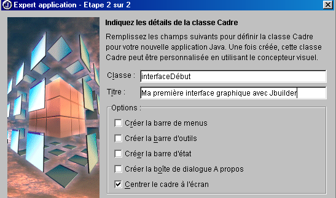
Classe | interfaceStart Este é o nome da classe correspondente à janela que será criada |
Título | Este é o texto que aparecerá na barra de título da janela |
Note que, acima, especificámos que a janela deve ser centrada no ecrã quando a aplicação for iniciada.
Clique em [Concluir]
- É aqui que o JBuilder se torna útil.
- Ele gera os ficheiros de código-fonte .java para as duas classes que nomeámos: a classe da aplicação e a classe da GUI. Estes dois ficheiros aparecem na estrutura do projeto, na janela à esquerda

- Para aceder ao código gerado para as duas classes, basta clicar duas vezes no ficheiro .java correspondente. Voltaremos ao código gerado mais tarde.
- Certifique-se de que a opção «Ver/Estrutura» está marcada. Isto permite-lhe visualizar a estrutura da classe atualmente selecionada (clique duas vezes no ficheiro .java). Aqui, por exemplo, está a estrutura da classe «début»:
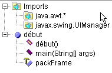
Aqui aprendemos sobre:
-
as bibliotecas importadas (imports)
-
que existe um construtor start()
-
que existe um método estático main()
-
que existe um atributo packFrame
Qual é a vantagem de ter acesso à estrutura de uma classe?
-
Obtém-se uma visão geral da mesma. Isto é útil se a sua classe for complexa.
-
Pode aceder ao código de um método clicando nele na janela da estrutura da classe. Mais uma vez, isto é útil se a sua classe tiver centenas de linhas. Não precisa de percorrer todas as linhas para encontrar o código que procura.
O código gerado pelo JBuilder já está pronto a usar. Clique em Run/Run Project ou prima F9 e verá a janela que solicitou:

Além disso, ela fecha corretamente quando clica no botão Fechar da janela. Acabámos de criar a nossa primeira interface gráfica de utilizador. Podemos guardar o nosso projeto utilizando a opção Ficheiro/Fechar Projetos:

Ao clicar em «All», todos os projetos na janela acima serão selecionados. Clicar em «OK» irá fechá-los. Se estivermos curiosos o suficiente para navegar, utilizando o Explorador do Windows, até à pasta do nosso projeto (aquela especificada ao assistente no início da configuração do projeto), encontraremos os seguintes ficheiros lá:
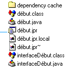
No nosso exemplo, especificámos que todos os ficheiros (.java de código-fonte, .class de saída, .jpr de backup) devem estar na mesma pasta que o projeto .jpr.
5.2.2. Ficheiros gerados pelo JBuilder para uma interface gráfica
Vamos agora dar uma olhadela aos ficheiros de código-fonte .java gerados pelo JBuilder. É importante saber como interpretar o que é gerado, uma vez que, na maioria das vezes, teremos de adicionar código ao que já existe. Comecemos por abrir o nosso projeto: Ficheiro/Abrir Projeto e selecionemos o projeto debut.jpr. Veremos o projeto que criámos anteriormente.
5.2.2.1. A classe principal
Vamos examinar a classe debut.java clicando duas vezes no seu nome na janela que exibe a lista de ficheiros do projeto. Temos o seguinte código:
import javax.swing.UIManager;
import java.awt.*;
public class début {
boolean packFrame = false;
/**Building the application*/
public début() {
interfaceDébut frame = new interfaceDébut();
//Validate frames with predefined sizes
//Compact frames with preferred size information - e.g. from their layout
if (packFrame) {
frame.pack();
}
else {
frame.validate();
}
//Center window
Dimension screenSize = Toolkit.getDefaultToolkit().getScreenSize();
Dimension frameSize = frame.getSize();
if (frameSize.height > screenSize.height) {
frameSize.height = screenSize.height;
}
if (frameSize.width > screenSize.width) {
frameSize.width = screenSize.width;
}
frame.setLocation((screenSize.width - frameSize.width) / 2, (screenSize.height - frameSize.height) / 2);
frame.setVisible(true);
}
/**Main method*/
public static void main(String[] args) {
try {
UIManager.setLookAndFeel(UIManager.getSystemLookAndFeelClassName());
}
catch(Exception e) {
e.printStackTrace();
}
new début();
}
}
Vamos comentar o código gerado:
- A função principal define a aparência da janela (setLookAndFeel) e cria uma instância da classe début.
- O construtor début() é então executado. Cria uma instância de frame da classe window (new interfaceDébut()). Esta instância é construída, mas não é apresentada.
- A janela é então dimensionada com base nas informações disponíveis para cada um dos seus componentes (frame.validate). Em seguida, inicia a sua existência independente, exibindo-se e respondendo às entradas do utilizador.
- A janela é centrada no ecrã porque solicitámos isso ao configurar a janela com o assistente.
Vamos ver o que aconteceria se reduzíssemos o código do début.java ao seu mínimo, tal como fizemos no início do capítulo. Vamos criar uma nova classe. Selecione Ficheiro/Nova Classe:

Dê à nova classe o nome «start2» e clique em [Concluir]. Um novo ficheiro aparece no projeto:

O ficheiro début2.java é reduzido à sua forma mais simples:
Vamos completar a classe da seguinte forma:
public class début2 {
// main function
public static void main(String args[]){
// creates the
new interfaceDébut().show(); // or new interfaceDébut.setVisible(true);
}//hand
}//class start2
A função main cria uma instância da janela interfaceDébut e exibe-a (show). Antes de executar o nosso projeto, precisamos de especificar que a classe que contém a função main a ser executada é agora a classe début2. Clique com o botão direito do rato no projeto début.jpr e selecione a opção Propriedades, depois o separador Execução:
21

Aqui, está indicado que a classe principal é «début» (1). Clique no botão (2) para selecionar uma classe principal diferente:

Selecione «début2» e clique em [OK].

Clique em [OK] para confirmar esta escolha e, em seguida, execute o projeto selecionando Run/Run Project ou premindo F9. Aparece a mesma janela que com a classe «start», exceto que não está centrada, uma vez que isso não foi solicitado aqui. A partir de agora, já não apresentaremos a classe principal gerada pelo JBuilder, porque esta faz sempre a mesma coisa: criar uma janela. A partir de agora, iremos concentrar-nos na classe da janela.
5.2.2.2. A classe da janela
Vamos agora analisar o código que foi gerado para a classe interfaceDébut:
import java.awt.*;
import java.awt.event.*;
import javax.swing.*;
public class interfaceDébut extends JFrame {
JPanel contentPane;
BorderLayout borderLayout1 = new BorderLayout();
/**Building the frame*/
public interfaceDébut() {
enableEvents(AWTEvent.WINDOW_EVENT_MASK);
try {
jbInit();
}
catch(Exception e) {
e.printStackTrace();
}
}
/**Initialize component*/
private void jbInit() throws Exception {
contentPane = (JPanel) this.getContentPane();
contentPane.setLayout(borderLayout1);
this.setSize(new Dimension(400, 300));
this.setTitle("Ma première interface graphique avec Jbuilder");
}
/**Replaced, so we can get out when the window is closed*/
protected void processWindowEvent(WindowEvent e) {
super.processWindowEvent(e);
if (e.getID() == WindowEvent.WINDOW_CLOSING) {
System.exit(0);
}
}
}
5.2.2.2.1. Bibliotecas importadas
Estas são as bibliotecas java.awt, java.awt.event e javax.swing. As duas primeiras eram as únicas disponíveis para a criação de interfaces gráficas de utilizador nas primeiras versões do Java. A biblioteca javax.swing é mais recente. Aqui, é necessária para a janela JFrame utilizada neste exemplo.
5.2.2.2.2. Os atributos
O JPanel é um tipo de contentor no qual podem ser colocados componentes. O BorderLayout é um dos gestores de layout disponíveis para colocar componentes dentro do contentor. Em todos os nossos exemplos, não utilizaremos um gestor de layout e colocaremos nós próprios os componentes num local específico dentro do contentor. Para tal, utilizaremos o gestor de layout nulo.
5.2.2.2.3. O construtor da janela
/**Building the frame*/
public interfaceDébut() {
enableEvents(AWTEvent.WINDOW_EVENT_MASK);
try {
jbInit();
}
catch(Exception e) {
e.printStackTrace();
}
}
/**Initialize component*/
private void jbInit() throws Exception {
contentPane = (JPanel) this.getContentPane();
contentPane.setLayout(borderLayout1);
this.setSize(new Dimension(400, 300));
this.setTitle("Ma première interface graphique avec Jbuilder");
}
- O construtor começa por indicar que irá tratar os eventos na janela (enableEvents) e, em seguida, chama o método jbInit.
- O contentor (JPanel) da janela (JFrame) é obtido (getContentPane)
- O gestor de layout é definido (setLayout)
- O tamanho da janela é definido (setSize)
- O título da janela é definido (setTitle)
5.2.2.2.4. O manipulador de eventos
/**Replaced, so we can get out when the window is closed*/
protected void processWindowEvent(WindowEvent e) {
super.processWindowEvent(e);
if (e.getID() == WindowEvent.WINDOW_CLOSING) {
System.exit(0);
}
O construtor indicou que a classe iria lidar com eventos de janela. O método processWindowEvent executa esta tarefa. Começa por passar o WindowEvent recebido para a sua classe pai (JFrame); depois, se o evento for WINDOW_CLOSING — acionado ao clicar no botão de fechar da janela — a aplicação é encerrada.
5.2.2.2.5. Conclusão
O código da classe da janela difere do apresentado no exemplo no início do capítulo. Se estivéssemos a utilizar um gerador de código Java diferente do JBuilder, provavelmente teríamos um código ainda mais diferente. Na prática, aceitaremos o código gerado pelo JBuilder para construir a janela, de modo a podermos concentrar-nos exclusivamente na escrita dos manipuladores de eventos para a interface gráfica do utilizador.
5.2.3. Desenhar uma GUI
5.2.3.1. Um exemplo
No exemplo anterior, não colocámos quaisquer componentes na janela. Vamos agora criar uma janela com um botão, um rótulo e um campo de entrada:

Os campos são os seguintes:
N.º | nome | tipo | função |
1 | lblInput | JLabel | um rótulo |
2 | txtInput | JTextField | um campo de entrada |
3 | cmdDisplay | JButton | para exibir o conteúdo do campo de texto txtSaisie numa caixa de diálogo |
Seguindo o mesmo procedimento do projeto anterior, compile o projeto interface2.jpr sem adicionar nenhum componente à janela por enquanto.

Na janela acima, selecione a classe interface2.java. À direita desta janela encontra-se uma pasta com separadores:

A guia «Source» dá acesso ao código-fonte da classe interface2.java. A guia «Design» permite-lhe construir visualmente a janela. Selecione esta guia. Agora vê o contentor da janela, que irá conter os componentes que nele colocar. Atualmente, está vazio. A janela à esquerda mostra a estrutura da classe:

isto | representa a janela |
contentPane | o seu contentor, no qual iremos colocar componentes, bem como o modo de disposição desses componentes dentro do contentor (BorderLayout por predefinição) |
borderLayout1 | uma instância do gestor de layout |
Selecione este objeto. A janela de propriedades aparecerá então à direita:

Algumas destas propriedades merecem destaque:
fundo | para definir a cor de fundo da janela |
foreground | para definir a cor do texto e dos botões na janela |
JMenuBar | para associar um menu à janela |
title | para atribuir um título à janela |
resizable | para definir o tipo de janela |
font | para definir o tipo de letra do texto na janela |
Com este objeto ainda selecionado, pode redimensionar o contentor exibido no ecrã arrastando os pontos de ancoragem à volta do contentor:

Estamos agora prontos para colocar componentes no contentor acima. Antes de o fazer, vamos alterar o gestor de layout. Selecione o objeto contentPane na janela de estrutura:

Em seguida, na janela de propriedades deste objeto, selecione a propriedade layout e escolha o valor null entre as opções disponíveis:

Esta ausência de um gestor de layout permitirá-nos colocar livremente os componentes dentro do contentor. Chegou a altura de os selecionar.
Quando o painel Design está selecionado, os componentes ficam disponíveis numa pasta com separadores na parte superior da janela de design:

Para construir a interface gráfica do utilizador, dispomos de componentes Swing (1) e componentes AWT (2). Aqui, iremos utilizar os componentes Swing. Na barra de componentes acima, selecione um componente JLabel (3), um componente JTextField (4) e um componente JButton (5), e coloque-os no contentor da janela Design.
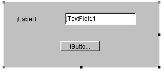
Agora vamos personalizar cada um destes três componentes:
- o rótulo (JLabel) jLabel1
Selecione o componente para abrir a janela Propriedades. Na janela Propriedades, modifique as seguintes propriedades: nome: lblSaisie, texto: Saisie
- o campo de texto (JTextField) jTextfield1
Selecione o componente para abrir a janela de propriedades. Na janela, modifique as seguintes propriedades: nome: txtSaisie, texto: deixe em branco
- o botão (JButton): nome: cmdAfficher, texto: Exibir
Temos agora a seguinte janela:

e a seguinte estrutura:
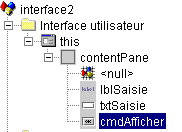
Podemos executar (F9) o nosso projeto para ter uma primeira visão da janela em ação:
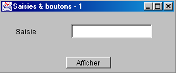
Feche a janela. Ainda precisamos de escrever o procedimento associado a um clique no botão Mostrar. Selecione o botão para aceder à janela Propriedades. Esta janela tem dois separadores: Propriedades e Eventos. Selecione Eventos.

A coluna da esquerda da janela lista os eventos possíveis para o botão. Um clique num botão corresponde ao evento actionPerformed. A coluna da direita contém o nome do procedimento chamado quando o evento correspondente ocorre. Clique na célula à direita do evento actionPerformed:

O JBuilder gera um nome predefinido para cada manipulador de eventos no formato ComponentName_EventName, neste caso cmdDisplay_actionPerformed. Pode eliminar o nome predefinido e introduzir um nome diferente. Para aceder ao código do manipulador cmdDisplay_actionPerformed, basta clicar duas vezes no seu nome acima. Será então automaticamente direcionado para o painel de código-fonte da classe, posicionado no esqueleto do código do manipulador de eventos:
Resta apenas completar este código. Aqui, queremos apresentar uma caixa de diálogo com o conteúdo do campo txtSaisie:
void cmdAfficher_actionPerformed(ActionEvent e) {
JOptionPane.showMessageDialog(this, "texte saisi="+txtSaisie.getText(),
"Vérification de la saisie",JOptionPane.INFORMATION_MESSAGE);
}
JOptionPane é uma classe da biblioteca javax.swing. Permite-lhe apresentar mensagens acompanhadas por um ícone ou solicitar informações ao utilizador. Aqui, estamos a utilizar um método estático da classe:

parentComponent | o objeto contêiner "pai" da caixa de diálogo: aqui, this. |
message | um objeto a ser exibido. Aqui, o conteúdo do campo de entrada |
title | o título da caixa de diálogo |
messageType | o tipo de mensagem a apresentar. Determina o ícone que será apresentado na caixa ao lado da mensagem. Valores possíveis: INFORMATION_MESSAGE, QUESTION_MESSAGE, ERROR_MESSAGE, WARNING_MESSAGE, PLAIN_MESSAGE |
Vamos executar a nossa aplicação (F9):
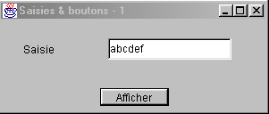

5.2.3.2. O código da classe da janela
import java.awt.*;
import java.awt.event.*;
import javax.swing.*;
import java.beans.*;
import javax.swing.event.*;
public class interface2 extends JFrame {
JPanel contentPane;
JLabel lblSaisie = new JLabel();
JTextField txtSaisie = new JTextField();
JButton cmdAfficher = new JButton();
/**Building the frame*/
public interface2() {
enableEvents(AWTEvent.WINDOW_EVENT_MASK);
try {
jbInit();
}
catch(Exception e) {
e.printStackTrace();
}
}
/**Initialize component*/
private void jbInit() throws Exception {
lblSaisie.setText("Saisie");
lblSaisie.setBounds(new Rectangle(25, 23, 71, 21));
contentPane = (JPanel) this.getContentPane();
contentPane.setLayout(null);
this.setSize(new Dimension(304, 129));
this.setTitle("Saisies & boutons - 1");
txtSaisie.setBounds(new Rectangle(120, 21, 138, 24));
cmdAfficher.setText("Afficher");
cmdAfficher.setBounds(new Rectangle(111, 77, 77, 20));
cmdAfficher.addActionListener(new java.awt.event.ActionListener() {
public void actionPerformed(ActionEvent e) {
cmdAfficher_actionPerformed(e);
}
});
contentPane.add(lblSaisie, null);
contentPane.add(txtSaisie, null);
contentPane.add(cmdAfficher, null);
}
/**Replaced, so we can get out when the window is closed*/
protected void processWindowEvent(WindowEvent e) {
super.processWindowEvent(e);
if (e.getID() == WindowEvent.WINDOW_CLOSING) {
System.exit(0);
}
}
void cmdAfficher_actionPerformed(ActionEvent e) {
JOptionPane.showMessageDialog(this, "texte saisi="+txtSaisie.getText(), "Vérification de la saisie",JOptionPane.INFORMATION_MESSAGE);
}
}
5.2.3.2.1. Os atributos
JPanel contentPane;
JLabel lblSaisie = new JLabel();
JTextField txtSaisie = new JTextField();
JButton cmdAfficher = new JButton();
Aqui temos o contêiner de componentes JPanel e os três componentes.
5.2.3.2.2. O construtor
/**Building the frame*/
public interface2() {
enableEvents(AWTEvent.WINDOW_EVENT_MASK);
try {
jbInit();
}
catch(Exception e) {
e.printStackTrace();
}
}
/**Initialize component*/
private void jbInit() throws Exception {
lblSaisie.setText("Saisie");
lblSaisie.setBounds(new Rectangle(25, 23, 71, 21));
contentPane = (JPanel) this.getContentPane();
contentPane.setLayout(null);
this.setSize(new Dimension(304, 129));
this.setTitle("Saisies & boutons - 1");
txtSaisie.setBounds(new Rectangle(120, 21, 138, 24));
cmdAfficher.setText("Afficher");
cmdAfficher.setBounds(new Rectangle(111, 77, 77, 20));
cmdAfficher.addActionListener(new java.awt.event.ActionListener() {
public void actionPerformed(ActionEvent e) {
cmdAfficher_actionPerformed(e);
}
});
contentPane.add(lblSaisie, null);
contentPane.add(txtSaisie, null);
contentPane.add(cmdAfficher, null);
}
O construtor interface2 é semelhante ao construtor da interface gráfica anterior que estudámos. As diferenças encontram-se no método jbInit: o código de construção da janela depende dos componentes colocados no seu interior. Podemos reutilizar o código jbInit adicionando os nossos próprios comentários:
private void jbInit() throws Exception {
// the window itself (size, title)
this.setSize(new Dimension(304, 129));
this.setTitle("Saisies & boutons - 1");
// the component container
contentPane = (JPanel) this.getContentPane();
// no formatting manager for this container
contentPane.setLayout(null);
// label lblSaisie (label, position, size)
lblSaisie.setText("Saisie");
lblSaisie.setBounds(new Rectangle(25, 23, 71, 21));
// input field (position, size)
txtSaisie.setBounds(new Rectangle(120, 21, 138, 24));
// display button (label, position, size)
cmdAfficher.setText("Afficher");
cmdAfficher.setBounds(new Rectangle(111, 77, 77, 20));
// button event manager
cmdAfficher.addActionListener(new java.awt.event.ActionListener() {
public void actionPerformed(ActionEvent e) {
cmdAfficher_actionPerformed(e);
}
});
// add the 3 components to the container
contentPane.add(lblSaisie, null);
contentPane.add(txtSaisie, null);
contentPane.add(cmdAfficher, null);
}//jbInit
Há dois pontos que merecem destaque:
- este código poderia ter sido escrito manualmente. Isto significa que o JBuilder não é necessário para criar uma interface gráfica de utilizador.
- a forma como o manipulador de eventos do botão cmdAfficher está definido. O manipulador de eventos do componente cmdAfficher poderia ter sido declarado utilizando `cmdAfficher.addActionListener(new handler())`, em que `handler` seria uma classe com um método público `actionPerformed` responsável por tratar o clique no botão Mostrar. Aqui, o JBuilder utiliza uma instância de uma classe anónima como manipulador:
new java.awt.event.ActionListener() {
public void actionPerformed(ActionEvent e) {
cmdAfficher_actionPerformed(e);
}
É criada uma nova instância da interface ActionListener com o seu método actionPerformed definido no momento. Este método simplesmente chama um método da classe interface2. Tudo isto é apenas uma solução alternativa para definir os procedimentos de tratamento de eventos para os componentes da janela dentro da mesma classe que a própria janela. Poderíamos fazê-lo de forma diferente:
o que faz com que o método actionPerformed seja procurado nesta, ou seja, na classe da janela. Este segundo método parece mais simples, mas o primeiro tem uma vantagem: permite diferentes manipuladores para diferentes botões, ao passo que o segundo método não o permite. Neste último caso, o único método actionPerformed tem de tratar cliques de diferentes botões e, por isso, tem de identificar primeiro qual o botão que desencadeou o evento antes de poder começar o processamento.
5.2.3.2.3. Manipuladores de eventos
Vemos os que já abordámos:
/**Replaced, so we can get out when the window is closed*/
protected void processWindowEvent(WindowEvent e) {
super.processWindowEvent(e);
if (e.getID() == WindowEvent.WINDOW_CLOSING) {
System.exit(0);
}
}
// click on View button
void cmdAfficher_actionPerformed(ActionEvent e) {
JOptionPane.showMessageDialog(this, "texte saisi="+txtSaisie.getText(), "Vérification de la saisie",JOptionPane.INFORMATION_MESSAGE);
}
5.2.3.3. Conclusão
A partir dos dois projetos estudados, podemos concluir que, uma vez construída a interface gráfica do utilizador com o JBuilder, a tarefa do programador consiste em escrever os manipuladores de eventos para os eventos que pretende tratar nessa interface gráfica do utilizador.
5.2.4. Procurar ajuda
Com Java, muitas vezes é necessário recorrer à ajuda, especialmente devido ao grande número de classes disponíveis. Aqui ficam algumas dicas para encontrar ajuda sobre uma classe. Selecione a opção Ajuda/Tópicos de Ajuda no menu.
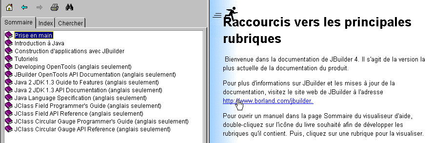
O ecrã de Ajuda tem geralmente duas janelas:
- a da esquerda, onde introduz o que procura. Tem três separadores: Índice, Índice remissivo e Pesquisa.
- a janela à direita, que apresenta os resultados da pesquisa
Está disponível ajuda sobre como utilizar o sistema de ajuda do JBuilder. Na ajuda do JBuilder, selecione a opção Ajuda/Utilizar a Ajuda. Isto irá explicar como utilizar o sistema de ajuda. Por exemplo, irá mostrar-lhe os diferentes componentes do visualizador de ajuda:

Vamos dar uma olhadela mais atenta às páginas Índice e Índice.
5.2.4.1. Ajuda: Índice
5.2.4.1.1. Índice: Introdução ao Java
Aqui encontrará os conceitos básicos de Java, mas não só isso, como mostra a lista de tópicos abordados nesta secção:
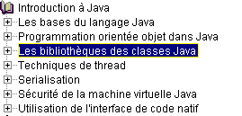
5.2.4.1.2. Índice: Tutoriais
Se selecionarmos a opção Tutoriais no índice acima, a janela à direita exibe uma lista dos tutoriais disponíveis:

Os tutoriais básicos são particularmente úteis para começar a utilizar o JBuilder. Existem muitos outros além dos apresentados acima e, quando pretender desenvolver uma aplicação, pode ser útil verificar primeiro se existe algum tutorial que o possa ajudar.
5.2.4.1.3. Índice: O JDK
Ao selecionar a opção Java 2 JDK 1.3, tem acesso a todas as bibliotecas do JDK. Geralmente, este não é o local certo para procurar se precisar de informações sobre uma classe específica e não souber em que biblioteca ela se encontra. No entanto, esta opção é útil se estiver interessado em obter uma visão geral das bibliotecas Java.
5.2.4.2. Ajuda: Índice
Selecione o separador Índice no painel esquerdo da janela Ajuda. Esta opção permite-lhe, por exemplo, encontrar ajuda sobre uma classe. Suponha, por exemplo, que deseja conhecer os métodos dos campos de entrada JTextField do Swing. Digite JTextField no campo de pesquisa:

A Ajuda irá apresentar entradas do índice que comecem com o texto que digitou:

Basta clicar duas vezes na entrada que lhe interessa, neste caso a classe JTextField. A ajuda para esta classe aparecerá então na janela à direita:

É então fornecida uma descrição completa da classe.
5.2.5. Alguns componentes Swing
Apresentaremos agora várias aplicações que utilizam os componentes Swing mais comuns para explorar os seus principais métodos e propriedades. Para cada aplicação, apresentaremos a interface gráfica e o código relevante, em particular o dos manipuladores de eventos.
5.2.5.1. Componentes JLabel e JTextField
Já nos deparámos com estes dois componentes. O JLabel é um componente de texto e o JTextField é um componente de campo de entrada. Os seus dois métodos principais são
String getText() | para recuperar o conteúdo do campo de entrada ou o texto do rótulo |
void setText(String text) | para definir o texto no campo ou no rótulo |
Os eventos normalmente utilizados para o JTextField são os seguintes:
actionPerformed | indica que o utilizador confirmou (ao premir Enter) o texto introduzido |
caretUpdate | indica que o utilizador moveu o cursor de entrada |
inputMethodChanged | indica que o utilizador alterou o campo de entrada |
Aqui está um exemplo que utiliza o evento caretUpdate para acompanhar as alterações num campo de entrada:

N.º | tipo | nome | função |
1 | JTextField | txtInput | campo de entrada |
2 | JTextField | txtControl | exibe o texto de 1 em tempo real |
3 | JButton | cmdClear | para limpar os campos 1 e 2 |
4 | JButton | cmdExit | para sair da aplicação |
O código relevante para esta aplicação é o seguinte:
import java.awt.*;
....
public class Cadre1 extends JFrame {
JPanel contentPane;
JTextField txtSaisie = new JTextField();
JLabel jLabel1 = new JLabel();
JLabel jLabel2 = new JLabel();
JTextField txtControle = new JTextField();
JButton CmdEffacer = new JButton();
JButton CmdQuitter = new JButton();
/**Building the frame*/
public Cadre1() {
enableEvents(AWTEvent.WINDOW_EVENT_MASK);
try {
jbInit();
}
catch(Exception e) {
e.printStackTrace();
}
}
/**Initialize component*/
private void jbInit() throws Exception {
....
txtSaisie.addCaretListener(new javax.swing.event.CaretListener() {
public void caretUpdate(CaretEvent e) {
txtSaisie_caretUpdate(e);
}
});
...
CmdEffacer.addActionListener(new java.awt.event.ActionListener() {
public void actionPerformed(ActionEvent e) {
CmdEffacer_actionPerformed(e);
}
});
...
CmdQuitter.addActionListener(new java.awt.event.ActionListener() {
public void actionPerformed(ActionEvent e) {
CmdQuitter_actionPerformed(e);
}
});
....
}
/**Replaced, so we can get out when the window is closed*/
protected void processWindowEvent(WindowEvent e) {
...
}
void txtSaisie_caretUpdate(CaretEvent e) {
// the input cursor has moved
txtControle.setText(txtSaisie.getText());
}
void CmdQuitter_actionPerformed(ActionEvent e) {
// quit the application
System.exit(0);
}
void CmdEffacer_actionPerformed(ActionEvent e) {
// delete the contents of the input field
txtSaisie.setText("");
}
}
Eis um exemplo de execução:

5.2.5.2. Componente JComboBox


Um componente JComboBox é uma lista suspensa combinada com um campo de entrada: o utilizador pode selecionar um item (2) ou digitar texto (1). Por predefinição, os JComboBoxes não são editáveis. Deve chamar explicitamente o método setEditable(true) para torná-los editáveis. Para saber mais sobre a classe JComboBox, digite JComboBox no índice da ajuda.
O objeto JComboBox pode ser criado de várias formas:
new JComboBox() | cria uma caixa de combinação vazia |
new JComboBox (Object[] items) | cria uma caixa de combinação contendo uma matriz de objetos |
new JComboBox(Vector items) | igual ao anterior, mas com um vetor de objetos |
Pode parecer surpreendente que uma caixa de combinação possa conter objetos quando normalmente contém cadeias de caracteres. Visualmente, é de facto esse o caso. Se um JComboBox contiver um objeto obj, exibe a cadeia de caracteres obj.toString(). Recorde-se que todos os objetos têm um método toString herdado da classe Object, que devolve uma cadeia de caracteres que «representa» o objeto.
Os métodos úteis da classe JComboBox são os seguintes:
void addItem(Object anObject) | adiciona um objeto à caixa de combinação |
int getItemCount() | retorna o número de itens no combo |
Object getItemAt(int i) | retorna o i-ésimo objeto na caixa de combinação |
void insertItemAt(Object anObject, int i) | Inserir o objeto anObject na posição i na caixa de combinação |
int getSelectedIndex() | retorna o índice do item selecionado na caixa de combinação |
Object getSelectedItem() | retorna o item selecionado na caixa de combinação |
void setSelectedIndex(int i) | seleciona o item i na caixa de combinação |
void setSelectedItem(Object anObject) | seleciona o objeto especificado na caixa de combinação |
void removeAllItems() | limpa a caixa de combinação |
void removeItemAt(int i) | remove o item número i da caixa de combinação |
void removeItem(Object anObject) | remove o objeto especificado da caixa de combinação |
void setEditable(boolean val) | torna a caixa de combinação editável (val=true) ou não (val=false) |
Quando um item é selecionado da lista suspensa, o evento actionPerformed é acionado, o qual pode então ser usado para detetar a alteração na seleção dentro da caixa de combinação. Na aplicação a seguir, usamos este evento para exibir o item que foi selecionado da lista.
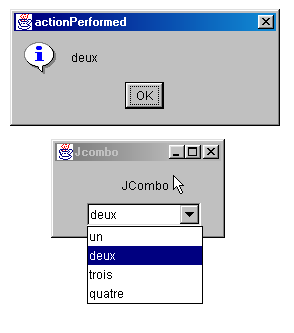
Estamos a mostrar apenas o código relevante para a janela.
public class Cadre1 extends JFrame {
JPanel contentPane;
JComboBox jComboBox1 = new JComboBox();
JLabel jLabel1 = new JLabel();
/**Building the frame*/
public Cadre1() {
enableEvents(AWTEvent.WINDOW_EVENT_MASK);
try {
jbInit();
}
catch(Exception e) {
e.printStackTrace();
}
// treatment - fill the combo
String[] infos={"un","deux","trois","quatre"};
for(int i=0;i<infos.length;i++)
jComboBox1.addItem(infos[i]);
}
/**Initialize component*/
private void jbInit() throws Exception {
....
jComboBox1.addActionListener(new java.awt.event.ActionListener() {
public void actionPerformed(ActionEvent e) {
jComboBox1_actionPerformed(e);
}
});
....
}
void jComboBox1_actionPerformed(ActionEvent e) {
// a new element has been selected - it is displayed
JOptionPane.showMessageDialog(this,jComboBox1.getSelectedItem(),
"actionPerformed",JOptionPane.INFORMATION_MESSAGE);
}
}
5.2.5.3. Componente JList
O componente JList do Swing é mais complexo do que o seu equivalente na biblioteca AWT. Existem duas diferenças importantes:
- O conteúdo da lista é gerido por um objeto separado da própria lista. Aqui, utilizaremos um objeto DefaultListModel, que funciona como um Vector, mas também notifica o objeto JList sempre que o seu conteúdo muda, para que a apresentação visual da lista seja atualizada em conformidade.
- A lista não rola por predefinição. Deve colocar a lista dentro de um contentor ScrollPane, o que permite a rolagem.
No código-fonte, uma lista pode ser definida da seguinte forma:
// the vector of list values
DefaultlistModel valeurs=new DefaultListModel();
// the list itself, to which we associate the vector of its values
JList jList1 = new JList(valeurs);
// the scrolling container in which the list is placed to obtain a scrolling list
JScrollPane jScrollPane1 = new JScrollPane(jList1);
Para incluir a lista jList1 no contentor jScrollPane1, o código gerado pelo JBuilder procede de forma diferente:
- declaração do contentor nos atributos da janela
- Em seguida, no código jbInit, a lista é adicionada ao contentor
Para adicionar valores à lista JList1 acima, basta adicioná-los à sua matriz de valores:
e verá então a seguinte janela:

Como é que esta interface foi criada?
- Selecione um componente JScrollPane na página «Swing Containers» dos componentes e arraste-o para a janela, redimensionando-o para as dimensões desejadas
- Selecione um componente JList na página "Swing" dos componentes e solte-o no contentor JScrollPane, onde ocupará todo o espaço.
O código gerado pelo JBuilder precisa de ser ligeiramente modificado para produzir o seguinte código:
public class interfaceAppli extends JFrame {
JPanel contentPane;
JLabel jLabel1 = new JLabel();
DefaultListModel valeurs=new DefaultListModel();
JList jList1 = new JList(valeurs);
JScrollPane jScrollPane1 = new JScrollPane();
JLabel jLabel2 = new JLabel();
/**Building the frame*/
public interfaceAppli() {
enableEvents(AWTEvent.WINDOW_EVENT_MASK);
try {
jbInit();
}
catch(Exception e) {
e.printStackTrace();
}
// treatment
// include the list in the scrollPane
// init list
for(int i=0;i<10;i++)
valeurs.addElement(""+i);
}
/**Initialize component*/
private void jbInit() throws Exception {
....
// the jList1 list is associated with the jcrollPane1 container
jScrollPane1.getViewport().add(jList1, null);
}
/**Replaced, so we can get out when the window is closed*/
protected void processWindowEvent(WindowEvent e) {
....
}
}
Vamos agora explorar os principais métodos da classe JList, pesquisando por JList no índice de ajuda. O objeto JList pode ser construído de várias maneiras:
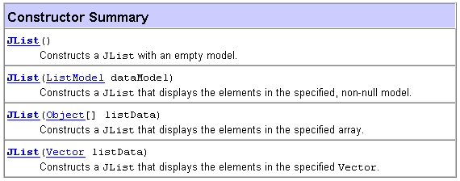
Um método simples é aquele que utilizámos: criar um DefaultListModel V vazio e, em seguida, associá-lo à lista a ser criada utilizando new JList(V). O conteúdo da lista não é gerido pelo objeto JList, mas pelo objeto que contém os valores da lista. Se o conteúdo tiver sido construído utilizando um objeto DefaultListModel baseado na classe Vector, os métodos da classe Vector podem ser utilizados para adicionar, inserir e remover elementos da lista. Uma lista pode suportar seleção única ou múltipla. Isto é definido pelo método setSelectionMode:

Pode determinar o modo de seleção atual utilizando getSelectionMode:

Os itens selecionados podem ser obtidos utilizando os seguintes métodos:
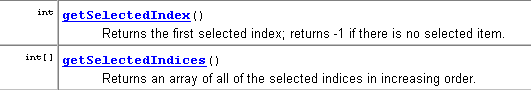
Sabemos como associar um vetor de valores a uma lista utilizando o construtor JList(DefaultListModel). Por outro lado, podemos obter o objeto DefaultListModel a partir de um JList da seguinte forma:

Agora sabemos o suficiente para escrever a seguinte aplicação:

Os componentes desta janela são os seguintes:
N.º | tipo | nome | função |
1 | JTextField | txtInput | campo de entrada |
2 | JList | jList1 | lista contida num contentor jScrollPane1 |
3 | JList | jList2 | lista contida num contentor jScrollPane2 |
4 | JButton | cmd1To2 | transfere os itens selecionados da lista 1 para a lista 2 |
5 | JButton | cmd2To1 | faz o contrário |
6 | JButton | cmdRaz1 | limpa a lista 1 |
7 | JButton | cmdRaz2 | limpa a lista 2 |
O utilizador digita texto no campo (1) e envia-o. Isto aciona o evento actionPerformed no campo de entrada, que é utilizado para adicionar o texto introduzido à lista 1. Aqui está o código para esta primeira função:
public class interfaceAppli extends JFrame {
JPanel contentPane;
JLabel jLabel1 = new JLabel();
JLabel jLabel2 = new JLabel();
JLabel jLabel3 = new JLabel();
JTextField txtSaisie = new JTextField();
JButton cmd1To2 = new JButton();
JButton cmd2To1 = new JButton();
DefaultListModel v1=new DefaultListModel();
DefaultListModel v2=new DefaultListModel();
JList jList1 = new JList(v1);
JList jList2 = new JList(v2);
JScrollPane jScrollPane1 = new JScrollPane();
JScrollPane jScrollPane2 = new JScrollPane();
JButton cmdRaz1 = new JButton();
JButton cmdRaz2 = new JButton();
JLabel jLabel4 = new JLabel();
/**Building the frame*/
public interfaceAppli() {
enableEvents(AWTEvent.WINDOW_EVENT_MASK);
try {
jbInit();
}
catch(Exception e) {
e.printStackTrace();
}
}//interfaceAppli
/**Initialize component*/
private void jbInit() throws Exception {
...
txtSaisie.addActionListener(new java.awt.event.ActionListener() {
public void actionPerformed(ActionEvent e) {
txtSaisie_actionPerformed(e);
}
});
...
// Jlist1 is placed in the jScrollPane1 container
jScrollPane1.getViewport().add(jList1, null);
// Jlist2 is placed in the jScrollPane2 container
jScrollPane2.getViewport().add(jList2, null);
...
}
/**Replaced, so we can get out when the window is closed*/
protected void processWindowEvent(WindowEvent e) {
...
}
void txtSaisie_actionPerformed(ActionEvent e) {
// the input text has been validated
// we recover it free of its start and end spaces
String texte=txtSaisie.getText().trim();
// if it's empty, we don't want it
if(texte.equals("")){
// error msg
JOptionPane.showMessageDialog(this,"Vous devez taper un texte",
"Erreur",JOptionPane.WARNING_MESSAGE);
// end
return;
}//if
// if it is not empty, it is added to the values in list 1
v1.addElement(texte);
// and empty the input field
txtSaisie.setText("");
}/// txtSaisie_actionperformed
}//class
O código para transferir os itens selecionados de uma lista para outra é o seguinte:
void cmd1To2_actionPerformed(ActionEvent e) {
// transfer items selected in list 1 to list 2
transfert(jList1,jList2);
}//cmd1To2
void cmd2To1_actionPerformed(ActionEvent e) {
// transfer selected items in jList2 to jList1
transfert(jList2,jList1);
}//cmd2TO1
private void transfert(JList L1, JList L2){
// transfer items selected in list 1 to list 2
// retrieve the array of indices of the elements selected in L1
int[] indices=L1.getSelectedIndices();
// anything to do?
if (indices.length==0) return;
// we retrieve the values of L1
DefaultListModel v1=(DefaultListModel)L1.getModel();
// and L2
DefaultListModel v2=(DefaultListModel)L2.getModel();
for(int i=indices.length-1;i>=0;i--){
// the values selected in L1 are added to L2
v2.addElement(v1.elementAt(indices[i]));
// l1 elements copied into L2 must be deleted from L1
v1.removeElementAt(indices[i]);
}//for
}//transfer
O código associado aos botões Raz é muito simples:
void cmdRaz1_actionPerformed(ActionEvent e) {
// empty list 1
v1.removeAllElements();
}//cmd Raz1
void cmdRaz2_actionPerformed(ActionEvent e) {
// empty list 2
v2.removeAllElements();
}///cmd Raz2
5.2.5.4. Caixas de seleção JCheckBox, botões de opção JButtonRadio
Propomos escrever a seguinte aplicação:

Os componentes da janela são os seguintes:
N.º | tipo | nome | função |
1 | JButtonRadio | jButtonRadio1 jButtonRadio2 jButtonRadio3 | 3 botões de opção que fazem parte do grupo buttonGroup1 |
2 | JCheckBox | jCheckBox1 jCheckBox2 jCheckBox3 | 3 caixas de seleção |
3 | JList | jList1 | uma lista num contentor jScrollPane1 |
4 | ButtonGroup | buttonGroup1 | componente não visível - utilizado para agrupar os três botões de opção, de modo que, quando um é selecionado, os outros são desmarcados. |
Um grupo de botões de opção pode ser criado da seguinte forma:
- Coloque cada botão de opção sem se preocupar em agrupá-los
- Coloque um componente Swing ButtonGroup no contentor. Este componente é não visual. Por isso, não aparece no designer de janelas. No entanto, aparece na sua estrutura:

Acima, no ramo Outros, pode ver os atributos não visuais da janela. Depois de criado um grupo de botões de opção, pode associar cada botão de opção a ele. Para tal, selecione as propriedades do botão de opção:

e, na propriedade buttonGroup do botão de opção, introduza o nome do grupo no qual pretende colocar o botão de opção, neste caso buttonGroup1. Repita este passo para os 3 botões de opção.
O método principal para botões de opção e caixas de seleção é o método isSelected(), que indica se a caixa de seleção ou o botão está selecionado. O texto associado ao componente pode ser recuperado usando getText() e definido usando setText(String text). A caixa de seleção ou o botão de opção pode ser selecionado usando o método setSelected(boolean value).
Quando um botão de opção ou uma caixa de seleção é clicado, o evento actionPerformed é acionado. No código a seguir, usamos este evento para acompanhar as alterações nos valores dos botões de opção e das caixas de seleção:
public class interfaceAppli extends JFrame {
JPanel contentPane;
JRadioButton jRadioButton1 = new JRadioButton();
JRadioButton jRadioButton2 = new JRadioButton();
JRadioButton jRadioButton3 = new JRadioButton();
JCheckBox jCheckBox1 = new JCheckBox();
JCheckBox jCheckBox2 = new JCheckBox();
JCheckBox jCheckBox3 = new JCheckBox();
ButtonGroup buttonGroup1 = new ButtonGroup();
JScrollPane jScrollPane1 = new JScrollPane();
DefaultListModel valeurs=new DefaultListModel();
JList jList1 = new JList(valeurs);
/**Building the frame*/
public interfaceAppli() {
enableEvents(AWTEvent.WINDOW_EVENT_MASK);
try {
jbInit();
}
catch(Exception e) {
e.printStackTrace();
}
}
/**Initialize component*/
private void jbInit() throws Exception {
jRadioButton1.setSelected(true);
jRadioButton1.setText("un");
jRadioButton1.setBounds(new Rectangle(57, 31, 49, 23));
jRadioButton1.addActionListener(new java.awt.event.ActionListener() {
public void actionPerformed(ActionEvent e) {
afficheRadioButtons(e);
}
});
jRadioButton2.setBounds(new Rectangle(113, 30, 49, 23));
jRadioButton2.addActionListener(new java.awt.event.ActionListener() {
public void actionPerformed(ActionEvent e) {
afficheRadioButtons(e);
}
});
jRadioButton2.setText("deux");
jRadioButton3.setBounds(new Rectangle(168, 30, 49, 23));
jRadioButton3.addActionListener(new java.awt.event.ActionListener() {
public void actionPerformed(ActionEvent e) {
afficheRadioButtons(e);
}
});
jRadioButton3.setText("trois");
// radio buttons are grouped together
buttonGroup1.add(jRadioButton1);
buttonGroup1.add(jRadioButton2);
buttonGroup1.add(jRadioButton3);
// checkboxes
jCheckBox1.setText("A");
jCheckBox1.setBounds(new Rectangle(58, 69, 32, 17));
jCheckBox1.addActionListener(new java.awt.event.ActionListener() {
public void actionPerformed(ActionEvent e) {
afficheCases(e);
}
});
jCheckBox2.setBounds(new Rectangle(112, 69, 40, 17));
jCheckBox2.addActionListener(new java.awt.event.ActionListener() {
public void actionPerformed(ActionEvent e) {
afficheCases(e);
}
});
jCheckBox2.setText("B");
jCheckBox3.setText("C");
jCheckBox3.setBounds(new Rectangle(170, 69, 37, 17));
jCheckBox3.addActionListener(new java.awt.event.ActionListener() {
public void actionPerformed(ActionEvent e) {
afficheCases(e);
}
});
....
}
/**Replaced, so we can get out when the window is closed*/
protected void processWindowEvent(WindowEvent e) {
...
}
private void afficheRadioButtons(ActionEvent e){
// displays the values of the 3 radio buttons
valeurs.addElement("boutons radio=("+jRadioButton1.isSelected()+","+
jRadioButton2.isSelected()+","+jRadioButton3.isSelected()+")");
}//afficheRadioButtons
void afficheCases(ActionEvent e) {
// displays checkbox values
valeurs.addElement("cases à cocher=["+jCheckBox1.isSelected()+","+
jCheckBox2.isSelected()+","+jCheckBox3.isSelected()+")");
}//afficheCases
}//class
Aqui está um exemplo de execução:

5.2.5.5. Componente JScrollBar
Vamos criar a seguinte aplicação:

N.º | tipo | nome | função |
1 | JScrollBar | jScrollBar1 | uma barra de deslocamento horizontal |
2 | JScrollBar | jScrollBar2 | um controlador deslizante vertical |
3 | JTextField | txtvalueHS | exibe o valor do controlo deslizante horizontal 1 - também permite definir este valor |
4 | JTextField | txtVSvalue | exibe o valor do controlo deslizante vertical 2 - permite também definir este valor |
- Um controlo deslizante JScrollBar permite ao utilizador selecionar um valor a partir de um intervalo de valores inteiros representados pela «barra» do controlo deslizante, ao longo da qual um cursor se move.
- Para um controlo deslizante horizontal, a extremidade esquerda representa o valor mínimo do intervalo, a extremidade direita o valor máximo e o cursor o valor atualmente selecionado. Para um controlo deslizante vertical, o mínimo é representado pela extremidade superior e o máximo pela extremidade inferior. O par (min,max) tem como valor predefinido (0,100).
- Clicar nas extremidades do controlo deslizante altera o valor em um incremento (positivo ou negativo), dependendo da extremidade clicada, conforme definido pelo parâmetro unitIncrement, cujo valor padrão é 1.
- Clicar em qualquer um dos lados do controlador deslizante altera o valor em um incremento (positivo ou negativo), dependendo da extremidade clicada, conhecido como blockIncrement, cujo valor padrão é 10.
- Estes cinco valores (min, max, value, unitIncrement, blockIncrement) podem ser recuperados utilizando os métodos getMinimum(), getMaximum(), getValue(), getUnitIncrement() e getBlockIncrement(), todos os quais devolvem um inteiro, e podem ser definidos utilizando os métodos setMinimum(int min), setMaximum(int max), setValue(int val), setUnitIncrement(int uInc) e setBlockIncrement(int bInc)
Há algumas coisas a saber ao utilizar componentes JScrollBar. Primeiro, pode ser encontrado na paleta de componentes do Swing:

Quando o arrasta para o contentor, este fica na orientação vertical por predefinição. Pode torná-lo horizontal utilizando a propriedade de orientação abaixo:

Na janela de propriedades acima, pode ver que tem acesso às propriedades minimum, maximum, value, unitIncrement e blockIncrement da JScrollBar. Pode, portanto, definir estas propriedades em tempo de design. Quando coloca uma barra de deslocamento no contentor, a sua «barra de deslocamento» não aparece:
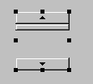
Pode resolver este problema adicionando uma borda ao componente. Isto é feito utilizando a sua propriedade border, que pode assumir vários valores:

Aqui está um exemplo de RaisedBevel:

Quando clica na extremidade superior de um controlador deslizante vertical, o seu valor diminui. Isto pode surpreender o utilizador comum, que normalmente espera ver o valor «aumentar». Resolvemos este problema definindo unitIncrement e blockIncrement com valores negativos.
Como é que se acompanham as alterações num controlador deslizante? Quando o seu valor muda, o evento adjustmentValueChanged é acionado. Basta associar um procedimento a este evento para ser notificado de todas as alterações no valor da barra de deslocamento.

O código relevante para a nossa aplicação é o seguinte:
....
public class cadreAppli extends JFrame {
JPanel contentPane;
JScrollBar jScrollBar1 = new JScrollBar();
Border border1;
JTextField txtValeurHS = new JTextField();
JScrollBar jScrollBar2 = new JScrollBar();
JTextField txtValeurVS = new JTextField();
TitledBorder titledBorder1;
/**Building the frame*/
public cadreAppli() {
enableEvents(AWTEvent.WINDOW_EVENT_MASK);
try {
jbInit();
}
catch(Exception e) {
e.printStackTrace();
}
}
/**Initialize component*/
private void jbInit() throws Exception {
...
// a border for scrollbars
border1 = BorderFactory.createBevelBorder(BevelBorder.RAISED,Color.white,Color.white,new Color(134, 134, 134),new Color(93, 93, 93));
// no border title
titledBorder1 = new TitledBorder("");
jScrollBar1.setOrientation(JScrollBar.HORIZONTAL);
jScrollBar1.setBorder(BorderFactory.createRaisedBevelBorder());
jScrollBar1.setAutoscrolls(true);
jScrollBar1.setBounds(new Rectangle(37, 17, 218, 20));
jScrollBar1.addAdjustmentListener(new java.awt.event.AdjustmentListener() {
public void adjustmentValueChanged(AdjustmentEvent e) {
jScrollBar1_adjustmentValueChanged(e);
}
});
txtValeurHS.addActionListener(new java.awt.event.ActionListener() {
public void actionPerformed(ActionEvent e) {
txtValeurHS_actionPerformed(e);
}
});
jScrollBar2.setBounds(new Rectangle(39, 51, 30, 27));
jScrollBar2.addAdjustmentListener(new java.awt.event.AdjustmentListener() {
public void adjustmentValueChanged(AdjustmentEvent e) {
jScrollBar2_adjustmentValueChanged(e);
}
});
jScrollBar2.setAutoscrolls(true);
jScrollBar2.setUnitIncrement(-1);
jScrollBar2.setBorder(BorderFactory.createRaisedBevelBorder());
txtValeurVS.addActionListener(new java.awt.event.ActionListener() {
public void actionPerformed(ActionEvent e) {
txtValeurVS_actionPerformed(e);
}
});
......
}
/**Replaced, so we can get out when the window is closed*/
protected void processWindowEvent(WindowEvent e) {
...
}
void jScrollBar1_adjustmentValueChanged(AdjustmentEvent e) {
// the value of scrollbar 1 has changed
txtValeurHS.setText(""+jScrollBar1.getValue());
}
void jScrollBar2_adjustmentValueChanged(AdjustmentEvent e) {
// scrollbar 2 value has changed
txtValeurVS.setText(""+jScrollBar2.getValue());
}
void txtValeurHS_actionPerformed(ActionEvent e) {
// set the horizontal scrollbar value
setValeur(jScrollBar1,txtValeurHS);
}
void txtValeurVS_actionPerformed(ActionEvent e) {
// set the vertical scrollbar value
setValeur(jScrollBar2,txtValeurVS);
}
private void setValeur(JScrollBar jS, JTextField jT){
// sets the scrollbar value jS with the field text jT
int valeur=0;
try{
valeur=Integer.parseInt(jT.getText());
jS.setValue(valeur);
}
catch (Exception e){
// error is displayed
afficher(""+e);
}//try-catch
}//setValeur
void afficher(String message){
// displays a message in a box
JOptionPane.showMessageDialog(this,message,"Menus",JOptionPane.INFORMATION_MESSAGE);
}//display
}
Aqui está um exemplo de execução:

5.2.5.6. Componente JTextArea
O componente JTextArea é um componente onde é possível introduzir várias linhas de texto, ao contrário do componente JTextField, onde só é possível introduzir uma única linha. Se este componente for colocado num contentor com rolagem (JScrollPane), obtém-se um campo de introdução de texto com rolagem. Este tipo de componente pode ser encontrado, por exemplo, numa aplicação de e-mail, onde o texto da mensagem a enviar é digitado num componente JTextArea. Os métodos padrão são String getText() para recuperar o conteúdo da área de texto, setText(String text) para definir o texto na área de texto e append(String text) para acrescentar texto ao texto já presente na área de texto. Considere a seguinte aplicação:

N.º | tipo | nome | função |
1 | JTextArea | txtText | uma área de texto com várias linhas |
2 | JButton | cmdDisplay | exibe o conteúdo de 1 numa caixa de diálogo |
3 | JButton | cmdClear | limpa o conteúdo de 1 |
4 | JTextField | txtAdd | texto adicionado ao texto em 1 quando validado premindo a tecla Enter. |
5 | JScrollPane | jScrollPane1 | recipiente rolável no qual a caixa de texto 1 foi colocada para criar uma caixa de texto rolável. |
O código relevante é o seguinte:
.....
public class cadreAppli extends JFrame {
JPanel contentPane;
JLabel jLabel1 = new JLabel();
JButton cmdAfficher = new JButton();
JScrollPane jScrollPane1 = new JScrollPane();
JTextArea txtTexte = new JTextArea();
JLabel jLabel2 = new JLabel();
JTextField txtAjout = new JTextField();
JButton cmdEffacer = new JButton();
/**Building the frame*/
public cadreAppli() {
enableEvents(AWTEvent.WINDOW_EVENT_MASK);
try {
jbInit();
}
catch(Exception e) {
e.printStackTrace();
}
}
/**Initialize component*/
private void jbInit() throws Exception {
cmdAfficher.addActionListener(new java.awt.event.ActionListener() {
public void actionPerformed(ActionEvent e) {
cmdAfficher_actionPerformed(e);
}
});
txtAjout.addActionListener(new java.awt.event.ActionListener() {
public void actionPerformed(ActionEvent e) {
txtAjout_actionPerformed(e);
}
});
cmdEffacer.addActionListener(new java.awt.event.ActionListener() {
public void actionPerformed(ActionEvent e) {
cmdEffacer_actionPerformed(e);
}
});
.......
jScrollPane1.getViewport().add(txtTexte, null);
}
/**Replaced, so we can get out when the window is closed*/
protected void processWindowEvent(WindowEvent e) {
........
}
void cmdAfficher_actionPerformed(ActionEvent e) {
// displays the contents of TextArea
afficher(txtTexte.getText());
}
void afficher(String message){
// displays a message in a box
JOptionPane.showMessageDialog(this,message,"Suivi",JOptionPane.INFORMATION_MESSAGE);
}// display
void cmdEffacer_actionPerformed(ActionEvent e) {
txtTexte.setText("");
}//cmdEffacer_actionPerformed
void txtAjout_actionPerformed(ActionEvent e) {
// add text
txtTexte.append(txtAjout.getText());
// raz addition
txtAjout.setText("");
}//
}
5.2.6. Eventos do rato
Ao desenhar num contentor, é importante saber a posição do rato, por exemplo, para exibir um ponto quando clicado. Os movimentos do rato desencadeiam eventos no contentor dentro do qual se move. Aqui estão, por exemplo, os eventos fornecidos pelo JBuilder para um contentor JPanel:

mouseClicked | clique do rato |
mouseDragged | o rato está a mover-se, botão esquerdo pressionado |
mouseEntered | o rato acabou de entrar na área do contentor |
mouseExited | o rato acabou de sair da área do contentor |
mouseMoved | o rato está a mover-se |
mousePressed | Botão esquerdo do rato pressionado |
mouseReleased | Botão esquerdo do rato solto |
Aqui está um programa para o ajudar a compreender melhor quando ocorrem os vários eventos do rato:

N.º | tipo | nome | função |
1 | JTextField | txtPosition | para exibir a posição do rato no contentor (possivelmente MouseMoved) |
2 | JList | lstDisplay | para exibir eventos do rato que não sejam MouseMoved |
3 | JButton | cmdClear | para limpar o conteúdo de 2 |
Quando executar este programa, eis o que obtém ao clicar:

Os eventos são empilhados a partir do topo da lista. Portanto, a captura de ecrã acima mostra que um clique desencadeia três eventos, na seguinte ordem:
- MousePressed quando o botão é pressionado
- MouseReleased quando o botão é solto
- MouseClicked, o que indica que a sequência dos dois eventos anteriores é considerada um clique. Isto pode ser um clique duplo. Mas acima, a informação clickCount=1 indica que se trata de um clique único.
Agora, se clicar no botão, mover o rato e soltar o botão:

Aqui vemos os três eventos:
- MousePressed quando o botão é pressionado inicialmente
- MouseDragged quando se move o rato com o botão premido
- MouseReleased quando se solta o botão
Nos dois exemplos acima, vemos que um evento do rato contém várias informações, incluindo as coordenadas do rato (x, y), por exemplo (408,65) na primeira linha acima.
Se continuarmos desta forma, descobrimos que o evento MouseExited é acionado assim que o rato sai do contentor ou passa por cima de um dos seus componentes. Neste último caso, o contentor recebe o evento MouseExited e o componente recebe o evento MouseEntered. O oposto ocorrerá quando o rato sair do componente para regressar ao contentor.
O que acontece durante um clique duplo?

Recebemos exatamente os mesmos eventos que num clique simples. A única diferença é que o evento contém a informação clickCount=2 (ver acima), indicando que ocorreu efetivamente um duplo clique.
O código relevante para esta aplicação é o seguinte:
public class Cadre1 extends JFrame {
JPanel contentPane;
JLabel jLabel1 = new JLabel();
JTextField txtPosition = new JTextField();
JScrollPane jScrollPane1 = new JScrollPane();
DefaultListModel valeurs=new DefaultListModel();
JList lstAffichage = new JList(valeurs);
JButton cmdEffacer = new JButton();
/**Building the frame*/
public Cadre1() {
enableEvents(AWTEvent.WINDOW_EVENT_MASK);
try {
jbInit();
}
catch(Exception e) {
e.printStackTrace();
}
}
/**Initialize component*/
private void jbInit() throws Exception {
contentPane.addMouseMotionListener(new java.awt.event.MouseMotionAdapter() {
public void mouseMoved(MouseEvent e) {
contentPane_mouseMoved(e);
}
public void mouseDragged(MouseEvent e) {
contentPane_mouseDragged(e);
}
});
contentPane.addMouseListener(new java.awt.event.MouseAdapter() {
public void mouseEntered(MouseEvent e) {
contentPane_mouseEntered(e);
}
public void mouseExited(MouseEvent e) {
contentPane_mouseExited(e);
}
public void mousePressed(MouseEvent e) {
contentPane_mousePressed(e);
}
public void mouseClicked(MouseEvent e) {
contentPane_mouseClicked(e);
}
public void mouseReleased(MouseEvent e) {
contentPane_mouseReleased(e);
}
});
cmdEffacer.addActionListener(new java.awt.event.ActionListener() {
public void actionPerformed(ActionEvent e) {
cmdEffacer_actionPerformed(e);
}
});
jScrollPane1.getViewport().add(lstAffichage, null);
...............
}
/**Replaced, so we can get out when the window is closed*/
protected void processWindowEvent(WindowEvent e) {
.........
}
void contentPane_mouseMoved(MouseEvent e) {
txtPosition.setText("("+e.getX()+","+e.getY()+")");
}
void contentPane_mouseDragged(MouseEvent e) {
afficher(e);
}
void contentPane_mouseEntered(MouseEvent e) {
afficher(e);
}
void afficher(MouseEvent e){
// displays the event in the lstAffichage list
valeurs.insertElementAt(e,0);
}
void contentPane_mouseExited(MouseEvent e) {
afficher(e);
}
void contentPane_mousePressed(MouseEvent e) {
afficher(e);
}
void contentPane_mouseClicked(MouseEvent e) {
afficher(e);
}
void contentPane_mouseReleased(MouseEvent e) {
afficher(e);
}
void cmdEffacer_actionPerformed(ActionEvent e) {
// deletes the list
valeurs.removeAllElements();
}
}
5.2.7. Criar uma janela com um menu
Agora vamos ver como criar uma janela com um menu utilizando o JBuilder. Iremos criar a seguinte janela:


Crie um novo projeto a partir de uma janela vazia. Na lista de componentes «Swing Containers», selecione o componente JMenuBar (ver Figura 1 abaixo) e arraste-o para a janela que está a desenhar.
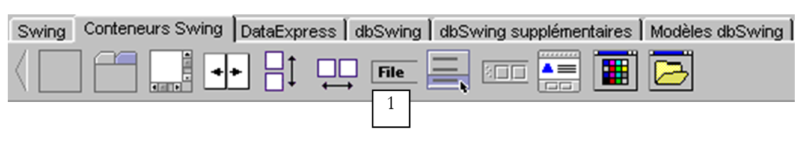
Não aparece nada na janela de design, mas o componente JMenuBar aparece no painel de estrutura da sua janela:

Clique duas vezes no elemento jMenuBar1 acima para aceder ao menu no modo de design:
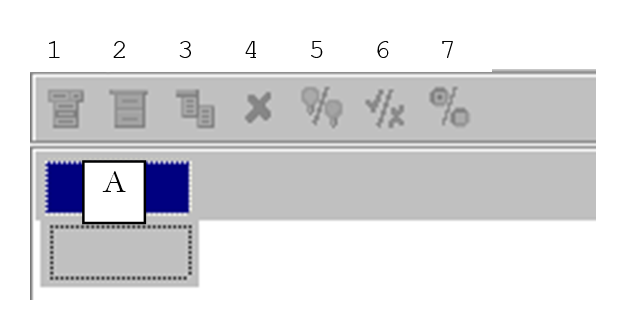
1 | Inserir um item de menu |
2 | Inserir um separador |
3 | Inserir um menu aninhado |
4 | Remover um item do menu |
5 | Desativar um item de menu |
6 | Item de menu com caixa de seleção |
7 | Alternar o botão de opção |
Para criar o seu primeiro item de menu, digite «Opções A» na caixa A acima e, em seguida, abaixo, na seguinte ordem: A1, A2, separador, A3, A4.

Em seguida, ao lado:

Utilize a ferramenta 3 para indicar que B3 é um submenu aninhado.
À medida que desenhamos o menu, a estrutura lógica da nossa janela evolui:
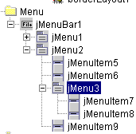
Se executarmos a nossa aplicação agora, veremos uma janela vazia sem menu. Precisamos de associar o menu criado à nossa janela. Para tal, na estrutura da janela, selecione o objeto «this»:
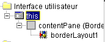
Terá então acesso às propriedades deste:

Uma delas é a JMenuBar, que é utilizada para definir o menu que será associado à janela. Clique na célula à direita de JMenuBar. Todos os menus que criou serão então apresentados. Aqui, teremos apenas a jMenuBar1. Selecione-a.
Execute a aplicação (F9):

Agora temos um menu, mas as opções ainda não fazem nada. As opções do menu são tratadas como componentes: têm propriedades e eventos. Na estrutura do menu, selecione a opção jMenuItem1:
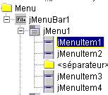
Agora tem acesso às suas propriedades e eventos:
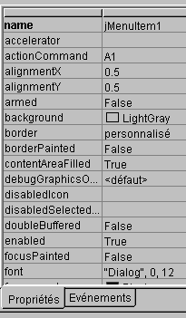
Selecione a página de eventos e clique na célula à direita do evento actionPerformed: este é o evento que ocorre quando clica num item do menu. É fornecido um procedimento de tratamento por predefinição. Clique duas vezes nele para aceder ao seu código:

Vamos escrever o seguinte código simples:
void jMenuItem1_actionPerformed(ActionEvent e) {
afficher("L'option A1 a été sélectionnée");
}
void afficher(String message){
// displays a message in a box
JOptionPane.showMessageDialog(this,message,"Menus",JOptionPane.INFORMATION_MESSAGE);
}//display
Execute a aplicação e selecione a opção A1 para ver a seguinte mensagem:

O código relevante para esta aplicação é o seguinte:
.....
public class Cadre1 extends JFrame {
JPanel contentPane;
BorderLayout borderLayout1 = new BorderLayout();
JMenuBar jMenuBar1 = new JMenuBar();
JMenu jMenu1 = new JMenu();
JMenuItem jMenuItem1 = new JMenuItem();
JMenuItem jMenuItem2 = new JMenuItem();
JMenuItem jMenuItem3 = new JMenuItem();
JMenuItem jMenuItem4 = new JMenuItem();
JMenu jMenu2 = new JMenu();
JMenuItem jMenuItem5 = new JMenuItem();
JMenuItem jMenuItem6 = new JMenuItem();
JMenu jMenu3 = new JMenu();
JMenuItem jMenuItem7 = new JMenuItem();
JMenuItem jMenuItem8 = new JMenuItem();
JMenuItem jMenuItem9 = new JMenuItem();
/**Building the frame*/
public Cadre1() {
enableEvents(AWTEvent.WINDOW_EVENT_MASK);
try {
jbInit();
}
catch(Exception e) {
e.printStackTrace();
}
}
/**Initialize component*/
private void jbInit() throws Exception {
// the window is associated with a menu
this.setJMenuBar(jMenuBar1);
jMenu1.setText("Options A");
jMenuItem1.setText("A1");
jMenuItem1.addActionListener(new java.awt.event.ActionListener() {
public void actionPerformed(ActionEvent e) {
jMenuItem1_actionPerformed(e);
}
});
jMenuItem2.setText("A2");
jMenuItem3.setText("A3");
jMenuItem4.setText("A4");
jMenu2.setText("Options B");
jMenuItem5.setText("B1");
jMenuItem6.setText("B2");
jMenu3.setText("B3");
jMenuItem7.setText("B31");
jMenuItem8.setText("B32");
jMenuItem9.setText("B4");
jMenuBar1.add(jMenu1);
jMenuBar1.add(jMenu2);
jMenu1.add(jMenuItem1);
jMenu1.add(jMenuItem2);
jMenu1.addSeparator();
jMenu1.add(jMenuItem3);
jMenu1.add(jMenuItem4);
jMenu2.add(jMenuItem5);
jMenu2.add(jMenuItem6);
jMenu2.add(jMenu3);
jMenu2.add(jMenuItem9);
jMenu3.add(jMenuItem7);
jMenu3.add(jMenuItem8);
}
/**Replaced, so we can get out when the window is closed*/
protected void processWindowEvent(WindowEvent e) {
....
}
void jMenuItem1_actionPerformed(ActionEvent e) {
afficher("L'option A1 a été sélectionnée");
}
void afficher(String message){
// displays a message in a box
JOptionPane.showMessageDialog(this,message,"Menus",JOptionPane.INFORMATION_MESSAGE);
}//display
}
5.3. Caixas de diálogo
5.3.1. Caixas de mensagem
Já utilizámos a classe JOptionPane para apresentar mensagens. Assim, o código seguinte:
import javax.swing.*;
public class dialog1 {
public static void main(String arg[]){
JOptionPane.showMessageDialog(null,"Un message","Titre de la boîte",JOptionPane.INFORMATION_MESSAGE);
}
}
exibe a seguinte caixa de diálogo:

Quando esta janela é fechada, ela desaparece, mas o segmento de execução em que estava a ser executada não é interrompido. Este fenómeno não ocorre normalmente. As caixas de diálogo são utilizadas dentro de uma aplicação que, em algum momento, utiliza uma instrução System.exit(n) para interromper todos os segmentos. Teremos isto em mente nos exemplos seguintes, todos eles construídos com base no mesmo modelo. No DOS, a aplicação pode ser interrompida com Ctrl-C. Com o JBuilder, utilize a opção Run/Reset Program (Ctrl-F2). Além disso, o primeiro argumento de showMessageDialog é nulo aqui. Normalmente, não é este o caso; é tipicamente isto, onde isto se refere à janela principal da aplicação.
5.3.2. Aparência e Sensação
A aparência da caixa de diálogo acima poderia ser diferente. Pode configurar esta aparência utilizando a classe javax.swing.UIManager. Quando comentámos o código gerado pelo JBuilder para a nossa primeira janela, deparámo-nos com uma instrução na qual não nos detivemos:
O método setLookAndFeel da classe UIManager (UI = Interface do Utilizador) permite definir a aparência das interfaces gráficas. A classe UIManager possui um método que permite determinar as possíveis «aparências» das interfaces:
static UIManager.LookAndFeelInfo[] | getInstalledLookAndFeels() |
O método devolve uma matriz de objetos LookAndFeelInfo. Esta classe possui um método:
String | getClassName() |
que devolve o nome da classe que «implementa» um determinado look and feel. Vamos experimentar o seguinte programa:
import javax.swing.*;
public class LookAndFeels {
// displays available looks and feels
public static void main(String[] args) {
// iste of installed look and feels
UIManager.LookAndFeelInfo[] lf=UIManager.getInstalledLookAndFeels();
// display
for(int i=0;i<lf.length;i++){
System.out.println(lf[i].getClassName());
}//for
}//hand
}//class
Isso produz os seguintes resultados:
javax.swing.plaf.metal.MetalLookAndFeel
com.sun.java.swing.plaf.motif.MotifLookAndFeel
com.sun.java.swing.plaf.windows.WindowsLookAndFeel
Parece, portanto, haver três «aspectos» «diferentes». Vamos revisitar o nosso programa de exibição de mensagens, experimentando os diferentes aspectos possíveis:
import javax.swing.*;
public class LookAndFeel2 {
// displays available looks and feels
public static void main(String[] args) {
// list of installed look and feels
UIManager.LookAndFeelInfo[] lf=UIManager.getInstalledLookAndFeels();
// display
for(int i=0;i<lf.length;i++){
// appearance manager
try{
UIManager.setLookAndFeel(lf[i].getClassName());
}catch(Exception ex){
System.err.println(ex.getMessage());
}//catch
// message
JOptionPane.showMessageDialog(null,"Un message",lf[i].getClassName(),JOptionPane.INFORMATION_MESSAGE);
}//for
}//hand
}//class
A execução produz as seguintes exibições:
 |  |  |
correspondentes, da direita para a esquerda, aos «temas» Metal, Padrão, Windows.
5.3.3. Caixas de confirmação
A classe JOptionPane possui um método showConfirmDialog para exibir caixas de diálogo de confirmação com os botões Sim, Não e Cancelar. Existem várias versões sobrecarregadas do método showConfirmDialog. Vamos examinar uma delas:
static int | showConfirmDialog(Component parentComponent, Object message, String title, int optionType) |
parentComponent | o componente pai da caixa de diálogo. Frequentemente, a janela ou o valor null |
message | a mensagem a apresentar |
título | o título da caixa de diálogo |
optionType | JOptionPane.YES_NO_OPTION: botões Sim, Não JOptionPane.YES_NO_CANCEL_OPTION: Botões Sim, Não, Cancelar |
O resultado devolvido pelo método é:
JOptionPane.YES_OPTION | o utilizador clicou em Sim |
JOptionPane.NO_OPTION | o utilizador clicou em Não |
JOptionPane.CANCEL_OPTION | o utilizador clicou em Cancelar |
JOptionPane.CLOSED_OPTION | O utilizador fechou a caixa de diálogo |
Eis um exemplo:
import javax.swing.*;
public class confirm1 {
public static void main(String[] args) {
// displays confirmation boxes
int réponse;
affiche(JOptionPane.showConfirmDialog(null,"Voulez-vous continuer ?","Confirmation",JOptionPane.YES_NO_OPTION));
affiche(JOptionPane.showConfirmDialog(null,"Voulez-vous continuer ?","Confirmation",JOptionPane.YES_NO_CANCEL_OPTION));
}//hand
private static void affiche(int réponse){
// indicates the type of response
switch(réponse){
case JOptionPane.YES_OPTION :
System.out.println("Oui");
break;
case JOptionPane.NO_OPTION :
System.out.println("Non");
break;
case JOptionPane.CANCEL_OPTION :
System.out.println("Annuler");
break;
case JOptionPane.CLOSED_OPTION :
System.out.println("Fermeture");
break;
}//switch
}//poster
}//class
 |  |
No console, são exibidas as mensagens «Não» e «Cancelar».
5.3.4. Caixa de entrada
A classe JOptionPane também permite introduzir dados utilizando o método showInputDialog. Mais uma vez, existem vários métodos sobrecarregados. Apresentamos um deles:
static String | showInputDialog(Component parentComponent, Object message, String title, int messageType) |
Os argumentos são os mesmos que já vimos várias vezes anteriormente. O método devolve a cadeia de caracteres digitada pelo utilizador. Aqui está um exemplo:
import javax.swing.*;
public class input1 {
public static void main(String[] args) {
// input
System.out.println("Chaîne saisie ["+
JOptionPane.showInputDialog(null,"Quel est votre nom","Saisie du nom",JOptionPane.QUESTION_MESSAGE )
+ "]");
}//hand
}//class
A exibição da caixa de diálogo de entrada:
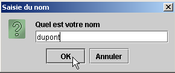
Saída da consola:
5.4. Caixas de seleção
Vamos agora analisar várias caixas de diálogo de seleção de ficheiros predefinidas no Java 2:
JFileChooser | uma caixa de diálogo de seleção de ficheiros para selecionar um ficheiro na árvore de ficheiros |
JColorChooser | uma caixa de diálogo de seleção para escolher uma cor |
5.4.1. Caixa de diálogo de seleção JFileChooser
Vamos criar a seguinte aplicação:

Os controlos são os seguintes:
N.º | Tipo | nome | função |
0 | JScrollPane | jScrollPane1 | Recipiente rolável para caixa de texto 1 |
1 | O próprio JTextArea dentro do JScrollPane | txtText | texto digitado pelo utilizador ou carregado a partir de um ficheiro |
2 | JButton | btnSave | guarda o texto de 1 num ficheiro de texto |
3 | JButton | btnLoad | permite carregar o conteúdo de um ficheiro de texto para 1 |
4 | JButton | btnClear | limpa o conteúdo de 1 |
É utilizado um controlo não visual: jFileChooser1. Este é selecionado a partir da paleta de contentores Swing do JBuilder:
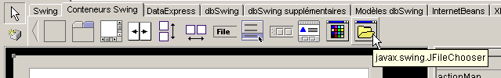
Colocamos o componente na janela de design, mas fora do formulário. Ele aparece na lista de componentes:

Vamos agora apresentar o código de programa relevante para dar uma visão geral:
import java.awt.*;
import java.awt.event.*;
import javax.swing.*;
import javax.swing.filechooser.FileFilter;
import java.io.*;
public class dialogues extends JFrame {
// frame components
JPanel contentPane;
JButton btnSauvegarder = new JButton();
JButton btnCharger = new JButton();
JButton btnEffacer = new JButton();
JScrollPane jScrollPane1 = new JScrollPane();
JTextArea txtTexte = new JTextArea();
JFileChooser jFileChooser1 = new JFileChooser();
// file filters
javax.swing.filechooser.FileFilter filtreTxt = null;
//Building the frame
public dialogues() {
enableEvents(AWTEvent.WINDOW_EVENT_MASK);
try {
jbInit();
// other initializations
moreInit();
}
catch(Exception e) {
e.printStackTrace();
}
}
// moreInit
private void moreInit(){
// window construction initializations
// filter *.txt
filtreTxt = new javax.swing.filechooser.FileFilter(){
public boolean accept(File f){
// do we accept f?
return f.getName().toLowerCase().endsWith(".txt");
}//accept
public String getDescription(){
// filter description
return "Fichiers Texte (*.txt)";
}//getDescription
};
// we add the filter
jFileChooser1.addChoosableFileFilter(filtreTxt);
// we also want to filter all files
jFileChooser1.setAcceptAllFileFilterUsed(true);
// set the start directory of the FileChooser box to the current directory
jFileChooser1.setCurrentDirectory(new File("."));
}
//Initialize component
private void jbInit() throws Exception {
.......................
}
//Replaced, so we can get out when the window is closed
protected void processWindowEvent(WindowEvent e) {
......................
}
}
void btnCharger_actionPerformed(ActionEvent e) {
// file selection using a JFileChooser object
// we set the initial filter
jFileChooser1.setFileFilter(filtreTxt);
// the selection box is displayed
int returnVal = jFileChooser1.showOpenDialog(this);
// did the user choose anything?
if(returnVal == JFileChooser.APPROVE_OPTION) {
// put the file in the text field
lireFichier(jFileChooser1.getSelectedFile());
}//if
}//btnCharger_actionPerformed
// lireFichier
private void lireFichier(File fichier){
// displays the contents of the text file file in the text field
// delete the text field
txtTexte.setText("");
// some data
BufferedReader IN=null;
String ligne=null;
try{
// open file in read mode
IN=new BufferedReader(new FileReader(fichier));
// read the file line by line
while((ligne=IN.readLine())!=null){
txtTexte.append(ligne+"\n");
}//while
// close file
IN.close();
}catch(Exception ex){
// an error has occurred
txtTexte.setText(""+ex);
}//catch
}
// delete
void btnEffacer_actionPerformed(ActionEvent e) {
// delete the text box
txtTexte.setText("");
}
// save
void btnSauvegarder_actionPerformed(ActionEvent e) {
// saves the contents of the text box to a file
// we set the initial filter
jFileChooser1.setFileFilter(filtreTxt);
// the backup selection box is displayed
int returnVal = jFileChooser1.showSaveDialog(this);
// did the user choose anything?
if(returnVal == JFileChooser.APPROVE_OPTION) {
// we write the contents of the text box to file
écrireFichier(jFileChooser1.getSelectedFile());
}//if
}
// lireFichier
private void écrireFichier(File fichier){
// writes the contents of the text box to file
// some data
PrintWriter PRN=null;
try{
// open file for writing
PRN=new PrintWriter(new FileWriter(fichier));
// write the contents of the text box
PRN.print(txtTexte.getText());
// close file
PRN.close();
}catch(Exception ex){
// an error has occurred
txtTexte.setText(""+ex);
}//catch
}
Não iremos comentar o código dos métodos btnEffacer_Click, lireFichier e écrireFichier, uma vez que não introduzem nada de novo. Iremos concentrar-nos na classe JFileChooser e na forma de a utilizar. Esta classe é complexa — um pouco «confusa». Aqui, iremos utilizar apenas os seguintes métodos:
addChoosableFilter(FileFilter) | define os tipos de ficheiros disponíveis para seleção |
setAcceptAllFileFilterUsed(boolean) | indica se o tipo «Todos os ficheiros» deve ser oferecido para seleção ou não |
File getSelectedFile() | o ficheiro (File) selecionado pelo utilizador |
int showSaveDialog() | método que exibe a caixa de diálogo de gravação. Retorna um resultado do tipo int. O valor jFileChooser.APPROVE_OPTION indica que o utilizador efetuou uma seleção válida. Caso contrário, o utilizador cancelou a seleção ou ocorreu um erro. |
setCurrentDirectory | para definir o diretório inicial a partir do qual o utilizador começará a explorar o sistema de ficheiros |
setFileFilter(FileFilter) | para definir o filtro ativo |
O método showSaveDialog exibe uma caixa de diálogo de seleção semelhante à seguinte:

1 | lista suspensa criada com o método addChoosableFilter. Contém os chamados filtros de seleção, representados pela classe FileFilter. Cabe ao programador definir esses filtros e adicioná-los à lista 1. |
2 | diretório atual, definido pelo método setCurrentDirectory, caso esse método tenha sido utilizado; caso contrário, o diretório atual será a pasta «Meus Documentos» no Windows ou o diretório home no Unix. |
3 | Nome do ficheiro selecionado ou digitado diretamente pelo utilizador. Estará disponível através do método getSelectedFile() |
4 | Botões Guardar/Cancelar. Se o botão Guardar for utilizado, o método showSaveDialog devolve o resultado jFileChooser.APPROVE_OPTION |
Como são construídos os filtros de ficheiros na lista suspensa 1? Os filtros são adicionados à lista 1 utilizando o método:
addChoosableFilter(FileFilter) | define os tipos de ficheiro disponíveis para seleção |
da classe JFileChooser. Ainda precisamos de compreender a classe FileFilter. Trata-se, na verdade, da classe javax.swing.filechooser.FileFilter, que é uma classe abstrata — ou seja, uma classe que não pode ser instanciada, mas apenas derivada. Está definida da seguinte forma:
FileFilter() | construtor |
boolean accept(File) | indica se o ficheiro f corresponde ao filtro ou não |
String getDescription() | cadeia de caracteres com a descrição do filtro |
Vejamos um exemplo. Queremos que a lista suspensa 1 ofereça um filtro para selecionar ficheiros *.txt com a descrição «Ficheiros de texto (*.txt)».
- Precisamos de criar uma classe derivada da classe FileFilter
- Use o método booleano accept(File f) para devolver true se o nome do ficheiro f terminar em .txt
- Use o método String getDescription() para definir a descrição como "Ficheiros de texto (*.txt)"
Este filtro poderia ser definido na nossa aplicação da seguinte forma:
javax.swing.filechooser.FileFilter filtreTxt = new javax.swing.filechooser.FileFilter(){
public boolean accept(File f){
// do we accept f?
return f.getName().toLowerCase().endsWith(".txt");
}//accept
public String getDescription(){
// filter description
return "Fichiers Texte (*.txt)";
}//getDescription
};
Este filtro seria adicionado à lista de filtros do objeto jFileChooser1 utilizando a seguinte instrução:
Tudo isto e algumas outras inicializações são realizadas no método moreInit, que é executado quando a janela é criada (ver o programa completo acima). O código para o botão Guardar é o seguinte:
void btnSauvegarder_actionPerformed(ActionEvent e) {
// saves the contents of the text box to a file
// we set the initial filter
jFileChooser1.setFileFilter(filtreTxt);
// the backup selection box is displayed
int returnVal = jFileChooser1.showSaveDialog(this);
// did the user choose anything?
if(returnVal == JFileChooser.APPROVE_OPTION) {
// we write the contents of the text box to file
écrireFichier(jFileChooser1.getSelectedFile());
}//if
}
A sequência de operações é a seguinte:
- Definimos o filtro ativo como *.txt para permitir que o utilizador procure principalmente este tipo de ficheiro. O filtro «Todos os ficheiros» também está presente. Foi adicionado no procedimento moreInit. Portanto, temos dois filtros.
- A caixa de diálogo de seleção de ficheiros é apresentada. Aqui, o controlo é passado para o utilizador, que utiliza a caixa de diálogo para selecionar um ficheiro do sistema de ficheiros.
- Quando o utilizador sai da caixa de seleção, verificamos o valor de retorno para ver se devemos ou não guardar a caixa de texto. Se for o caso, ela deve ser guardada no ficheiro obtido através do método getSelectedFile.
O código associado ao botão «Carregar» é muito semelhante ao código do botão «Guardar».
void btnCharger_actionPerformed(ActionEvent e) {
// file selection using a JFileChooser object
// we set the initial filter
jFileChooser1.setFileFilter(filtreTxt);
// the selection box is displayed
int returnVal = jFileChooser1.showOpenDialog(this);
// did the user choose anything?
if(returnVal == JFileChooser.APPROVE_OPTION) {
// put the file in the text field
lireFichier(jFileChooser1.getSelectedFile());
}//if
}//btnCharger_actionPerformed
Existem duas diferenças:
- Para exibir a caixa de diálogo de seleção de ficheiros, utilizamos o método showOpenDialog em vez do método showSaveDialog. A caixa de diálogo exibida é semelhante à exibida pelo método showSaveDialog.
- Se o utilizador tiver selecionado um ficheiro com sucesso, chamamos o método readFile em vez do método writeFile.
5.4.1.1. Caixas de diálogo de seleção JColorChooser e JFontChooser
Continuamos o exemplo anterior adicionando dois novos botões:

Não | tipo | nome | função |
6 | JButton | btnColor | para definir a cor do texto da caixa de texto |
7 | JButton | btnFont | para definir o tipo de letra da caixa de texto |
O componente JColorChooser, que exibe uma caixa de diálogo de seleção de cores, pode ser encontrado na lista de componentes Swing no JBuilder:

Colocamos este componente na janela de design, mas fora do formulário. Não é visível no formulário, mas está, no entanto, presente na lista de componentes da janela:

A classe JColorChooser é muito simples. Exibimos a caixa de diálogo de seleção de cor utilizando o método int showDialog:
static Color | showDialog(Component component, String title, Color initialColor) |
Component component | o componente pai do seletor de cores, normalmente uma janela JFrame |
String título | o título na barra de título da caixa de seleção |
Cor intialColor | A cor inicialmente selecionada no seletor de cores |
Se o utilizador selecionar uma cor, o método devolve uma cor; caso contrário, devolve null. O código associado ao botão Cor é o seguinte:
void btnCouleur_actionPerformed(ActionEvent e) {
// choice of text color using JColorChooser component
Color couleur;
if((couleur=jColorChooser1.showDialog(this,"Choix d'une couleur",Color.BLACK))!=null){
// set the color of the characters in the text box
txtTexte.setForeground(couleur);
}//if
}
A classe Color está definida em java.awt.Color. Nessa classe estão definidas várias constantes, incluindo Color.BLACK para a cor preta. A caixa de diálogo de seleção apresentada é a seguinte

Curiosamente, a biblioteca Swing não fornece uma classe para selecionar um tipo de letra. Felizmente, existem recursos Java disponíveis online. Ao pesquisar a palavra-chave «JFontChooser», que parece ser um nome provável para tal classe, encontramos várias opções. O exemplo seguinte dar-nos-á a oportunidade de configurar o JBuilder para utilizar pacotes não incluídos na sua configuração inicial.
O pacote recuperado chama-se swingextras.jar e foi colocado na pasta <jdk>\jre\lib\perso, onde <jdk> se refere ao diretório de instalação do JDK utilizado pelo JBuilder. Poderia ter sido colocado em qualquer outro local.
 | 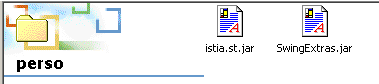 |
Vejamos o conteúdo do pacote SwingExtras.jar:

Contém o código-fonte Java dos componentes incluídos no pacote. Contém também as próprias classes:

Neste arquivo, repare que a classe JFontChooser se chama, na verdade, com.lamatek.swingextras.JFontChooser. Se não quiser escrever o nome completo, terá de incluir o seguinte no início do seu programa:
Como é que o compilador e a Máquina Virtual Java irão encontrar este novo pacote? No caso da utilização direta do JDK, isto já foi explicado, e o leitor pode encontrar os detalhes na secção sobre pacotes Java. Aqui, detalhamos o método a utilizar com o JBuilder. Os pacotes são configurados no menu Options/Configure JDKs:
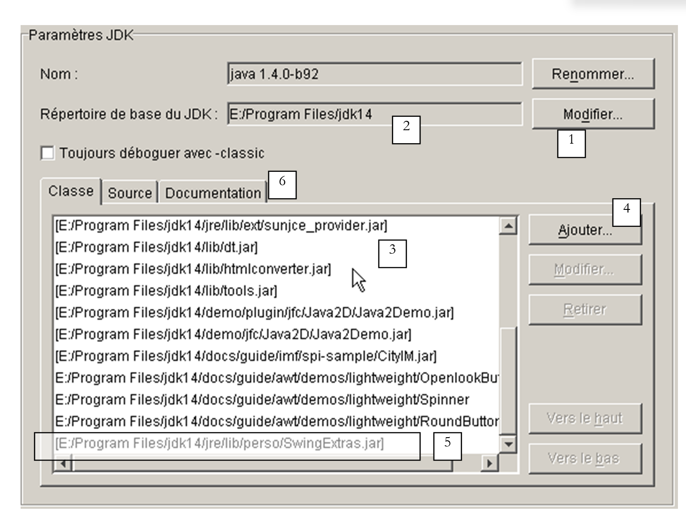
1 | O botão Editar (1) permite indicar ao JBuilder qual o JDK a utilizar. Neste exemplo, o JBuilder veio incluído com o JDK 1.3.1. Quando o JDK 1.4 foi lançado, foi instalado separadamente do JBuilder, e utilizámos o botão Editar para indicar ao JBuilder que utilizasse o JDK 1.4 a partir de agora, especificando o seu diretório de instalação |
2 | Diretório base do JDK atualmente utilizado pelo JBuilder |
3 | Lista de arquivos Java (.jar) utilizados pelo JBuilder. Pode adicionar mais utilizando o botão Adicionar (4) |
4 | O botão Adicionar (4) permite-lhe adicionar novos pacotes que o JBuilder utilizará tanto para compilar como para executar programas. Utilizámo-lo aqui para adicionar o pacote SwingExtras.jar (5) |
Agora o JBuilder está devidamente configurado para utilizar a classe JFontChooser. No entanto, precisaríamos de aceder à definição desta classe para a utilizar corretamente. O arquivo swingextras.jar contém ficheiros HTML que poderiam ser extraídos para utilização. Isto é desnecessário. A documentação Java incluída nos ficheiros .jar é diretamente acessível a partir do JBuilder. Para tal, configure o separador Documentação (6) acima. Aparece a seguinte janela nova:

O botão Adicionar permite-nos especificar que o ficheiro SwingExtras.jar deve ser analisado para obter documentação. Depois de feito isto, podemos ver que temos, de facto, acesso à documentação do SwingExtras.jar. Isto proporciona várias vantagens:
- se começar a digitar a instrução import
verá que o JBuilder fornece ajuda:

O pacote com.lamatek foi encontrado com sucesso.
- Agora, no programa seguinte:
Se premir F1 na palavra-chave JFontChooser, verá a ajuda para esta classe:

Podemos ver na barra de estado 1 que está, de facto, a ser utilizado um ficheiro HTML do pacote swingextras.jar. O exemplo apresentado acima é suficientemente claro para nos permitir escrever o código para o botão «Font» na nossa aplicação:
void btnPolice_actionPerformed(ActionEvent e) {
// choice of text font using JFontChooser component
jFontChooser1 = new JFontChooser(new Font("Arial", Font.BOLD, 12));
if (jFontChooser1.showDialog(this, "Choix d'une police") == JFontChooser.ACCEPT_OPTION) {
// change the font in the text box
txtTexte.setFont(jFontChooser1.getSelectedFont());
}//if
}
A caixa de diálogo de seleção apresentada pelo método showDialog acima é a seguinte:

5.5. A aplicação gráfica de cálculo de impostos
Voltamos à aplicação IMPOTS, que já abordámos duas vezes. Vamos agora adicionar-lhe uma interface gráfica de utilizador:
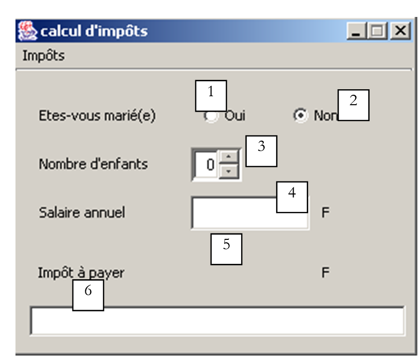
Os controlos são os seguintes
N.º | tipo | nome | função |
1 | JRadioButton | rdYes | marcado se casado |
2 | JRadioButton | rdNo | Marcado se não for casado |
3 | JSpinner | spinChildren | número de filhos do contribuinte Mínimo=0, Máximo=20, Incremento=1 |
4 | JTextField | txtSalário | salário anual do contribuinte em F |
5 | JLabel | lblTaxes | montante do imposto devido |
6 | JTextField | txtStatus | campo de mensagem de estado - não editável |
O menu é o seguinte:
opção principal | opção secundária | nome | função |
Impostos | |||
Inicializar | mnuInitialize | carrega os dados necessários para o cálculo a partir de um ficheiro de texto | |
Calcular | mnuCalculate | calcula o imposto devido quando todos os dados necessários estão presentes e corretos | |
Limpar | mnuLimpar | redefine o formulário para o seu estado inicial | |
Sair | mnuExit | fecha a aplicação |
Regras de funcionamento
- O menu «Calcular» permanece desativado enquanto o campo do salário estiver vazio
- Se, quando o cálculo for executado, o salário estiver incorreto, é apresentada uma mensagem de erro:

O programa é apresentado abaixo. Utiliza a classe *impots* criada no capítulo sobre classes. Parte do código gerado automaticamente pelo JBuilder não foi reproduzido aqui.
import java.awt.*;
import java.awt.event.*;
import javax.swing.*;
import javax.swing.filechooser.FileFilter;
import java.io.*;
import java.util.*;
import javax.swing.event.*;
public class frmImpots extends JFrame {
// window components
JPanel contentPane;
JMenuBar jMenuBar1 = new JMenuBar();
JMenu jMenu1 = new JMenu();
JMenuItem mnuInitialiser = new JMenuItem();
JMenuItem mnuCalculer = new JMenuItem();
JMenuItem mnuEffacer = new JMenuItem();
JMenuItem mnuQuitter = new JMenuItem();
JLabel jLabel1 = new JLabel();
JFileChooser jFileChooser1 = new JFileChooser();
JTextField txtStatus = new JTextField();
JRadioButton rdOui = new JRadioButton();
JRadioButton rdNon = new JRadioButton();
JLabel jLabel2 = new JLabel();
JLabel jLabel3 = new JLabel();
JTextField txtSalaire = new JTextField();
JLabel jLabel4 = new JLabel();
JLabel jLabel5 = new JLabel();
JLabel lblImpots = new JLabel();
JLabel jLabel7 = new JLabel();
ButtonGroup buttonGroup1 = new ButtonGroup();
JSpinner spinEnfants=null;
FileFilter filtreTxt=null;
// class attributes
double[] limites=null;
double[] coeffr=null;
double[] coeffn=null;
impots objImpots=null;
//Building the frame
public frmImpots() {
enableEvents(AWTEvent.WINDOW_EVENT_MASK);
try {
jbInit();
}
catch(Exception e) {
e.printStackTrace();
}
// other initializations
moreInit();
}
// form initialization
private void moreInit(){
// calculate menu disabled
mnuCalculer.setEnabled(false);
// inhibited input zones
txtSalaire.setEditable(false);
txtSalaire.setBackground(Color.WHITE);
// status field
txtStatus.setBackground(Color.WHITE);
// spinner Children - between 0 and 20 children
spinEnfants=new JSpinner(new SpinnerNumberModel(0,0,20,1));
spinEnfants.setBounds(new Rectangle(137,60,40,27));
contentPane.add(spinEnfants);
// filter *.txt for selection box
filtreTxt = new javax.swing.filechooser.FileFilter(){
public boolean accept(File f){
// do we accept f?
return f.getName().toLowerCase().endsWith(".txt");
}//accept
public String getDescription(){
// filter description
return "Fichiers Texte (*.txt)";
}//getDescription
};
// add the *.txt filter
jFileChooser1.addChoosableFileFilter(filtreTxt);
// we also want to filter all files
jFileChooser1.setAcceptAllFileFilterUsed(true);
// set the box's start directory FileChooser
jFileChooser1.setCurrentDirectory(new File("."));
}//moreInit
//Initialize component
private void jbInit() throws Exception {
................
}
//Replaced, so we can get out when the window is closed
protected void processWindowEvent(WindowEvent e) {
.....................
}
void mnuQuitter_actionPerformed(ActionEvent e) {
// quit the application
System.exit(0);
}
void mnuInitialiser_actionPerformed(ActionEvent e) {
// load the data file
// selected with the JFileChooser1 selection box
jFileChooser1.setFileFilter(filtreTxt);
if (jFileChooser1.showOpenDialog(this)!=JFileChooser.APPROVE_OPTION)
return;
// process the selected file
try{
// dATA READING
lireFichier(jFileChooser1.getSelectedFile());
// create impots object
objImpots=new impots(limites,coeffr,coeffn);
// confirmation
txtStatus.setText("Données chargées");
// salary can be modified
txtSalaire.setEditable(true);
// no more chgt possible
mnuInitialiser.setEnabled(false);
}catch(Exception ex){
// problem
txtStatus.setText("Erreur : " + ex.getMessage());
// end
return;
}//catch
}
private void lireFichier(File fichier) throws Exception {
// data tables
ArrayList aLimites=new ArrayList();
ArrayList aCoeffR=new ArrayList();
ArrayList aCoeffN=new ArrayList();
String[] champs=null;
// open file in read mode
BufferedReader IN=new BufferedReader(new FileReader(fichier));
// read the file line by line
// they are of the limit form coeffr coeffn
String ligne=null;
int numLigne=0; // line number courannte
while((ligne=IN.readLine())!=null){
// one more line
numLigne++;
// break down the line into fields
champs=ligne.split("\\s+");
// 3 fields?
if(champs.length!=3)
throw new Exception("ligne " + numLigne + "erronée dans fichier des données");
// we retrieve the three fields
aLimites.add(champs[0]);
aCoeffR.add(champs[1]);
aCoeffN.add(champs[2]);
}//while
// close file
IN.close();
// data transfer to bounded arrays
int n=aLimites.size();
limites=new double[n];
coeffr=new double[n];
coeffn=new double[n];
for(int i=0;i<n;i++){
limites[i]=Double.parseDouble((String)aLimites.get(i));
coeffr[i]=Double.parseDouble((String)aCoeffR.get(i));
coeffn[i]=Double.parseDouble((String)aCoeffN.get(i));
}//for
}
void mnuCalculer_actionPerformed(ActionEvent e) {
// tAX CALCULATION
// salary verification
int salaire=0;
try{
salaire=Integer.parseInt(txtSalaire.getText().trim());
if(salaire<0) throw new Exception();
}catch (Exception ex){
// error msg
txtStatus.setText("Salaire incorrect. Recommencez");
// focus on wrong field
txtSalaire.requestFocus();
// back to interface
return;
}
// no. of children
Integer InbEnfants=(Integer)spinEnfants.getValue();
// tAX CALCULATION
lblImpots.setText(""+objImpots.calculer(rdOui.isSelected(),InbEnfants.intValue(),salaire));
// delete status msg
txtStatus.setText("");
}
void txtSalaire_caretUpdate(CaretEvent e) {
// the salary has changed - update the calculate menu
mnuCalculer.setEnabled(! txtSalaire.getText().trim().equals(""));
}
void mnuEffacer_actionPerformed(ActionEvent e) {
// raz du formulaire
rdNon.setSelected(true);
spinEnfants.getModel().setValue(new Integer(0));
txtSalaire.setText("");
mnuCalculer.setEnabled(false);
lblImpots.setText("");
}
}
Aqui utilizámos um componente disponível apenas a partir do JDK 1.4, o JSpinner. Trata-se de um spinner, que, neste caso, permite ao utilizador definir o número de filhos. Este componente Swing não estava disponível na barra de componentes Swing do JBuilder 6 utilizado para testes. Isto não impede a sua utilização, mesmo que as coisas sejam um pouco mais complicadas do que para os componentes disponíveis na barra de componentes. Na verdade, não é possível arrastar o componente JSpinner para o formulário durante a fase de design. Deve fazê-lo em tempo de execução. Vejamos o código que faz isso:
// spinner Children - between 0 and 20 children
spinEnfants=new JSpinner(new SpinnerNumberModel(0,0,20,1));
spinEnfants.setBounds(new Rectangle(137,60,40,27));
contentPane.add(spinEnfants);
A primeira linha cria o componente JSpinner. Este componente pode ser utilizado para vários fins, não apenas como um spinner de inteiros, como aqui. O argumento do construtor JSpinner é um modelo de spinner numérico que aceita quatro parâmetros (valor, mínimo, máximo, incremento). O componente tem a seguinte forma:

valor | valor inicial exibido no componente |
min | valor mínimo que pode ser exibido no componente |
máx | valor máximo que pode ser exibido no componente |
incremento | valor de incremento do valor exibido ao utilizar as setas para cima/para baixo do componente |
O valor do componente é obtido através do seu método getValue, que devolve um tipo Object. Por isso, é necessária alguma conversão de tipos para obter o inteiro de que precisamos:
// nbre d'enfants
Integer InbEnfants=(Integer)spinEnfants.getValue();
// calcul de l'impôt
lblImpots.setText(""+objImpots.calculer(rdOui.isSelected(),
InbEnfants.intValue(),salaire));
Depois de definido o componente JSpinner, este é colocado na janela:
Em primeiro lugar, o utilizador deve utilizar a opção de menu Initialize, que cria um objeto tax utilizando o construtor
da classe impots. Recorde-se que isto foi definido como um exemplo no capítulo sobre classes. Consulte esse capítulo, se necessário. As três matrizes exigidas pelo construtor são preenchidas a partir do conteúdo de um ficheiro de texto com o seguinte formato:
12620.0 | 0 | 0 |
13190 | 0,05 | 631 |
15 640 | 0,1 | 1.290,5 |
24.740 | 0,15 | 2.072,5 |
31 810 | 0,2 | 3.309,5 |
39 970 | 0,25 | 4.900 |
48 360 | 0,3 | 6.898,5 |
55 790 | 0,35 | 9.316,5 |
92 970 | 0,4 | 12 106 |
127 860 | 0,45 | 16 754,5 |
151 250 | 0,50 | 23 147,5 |
172 040 | 0,55 | 30 710 |
195 000 | 0,60 | 39 312 |
0 | 0,65 | 49062 |
Cada linha contém três números separados por pelo menos um espaço. Este ficheiro de texto é selecionado pelo utilizador através de um componente JFileChooser. Depois de criado o objeto *impots*, basta deixar o utilizador introduzir as três informações necessárias: casado ou não, número de filhos, salário anual, e chamar o método calculate da classe impots. A operação pode ser repetida várias vezes. O próprio objeto *impots* é criado apenas uma vez, quando a opção *Initialize* é utilizada.
5.6. Escrever applets
5.6.1. Introdução
Depois de escrever uma aplicação com uma interface gráfica de utilizador, é bastante fácil convertê-la num applet. Armazenada na máquina A, pode ser descarregada através de um navegador web a partir da máquina B pela Internet. A aplicação original é, assim, partilhada entre muitos utilizadores, e esta é a principal vantagem de converter uma aplicação num applet. No entanto, nem todas as aplicações podem ser convertidas desta forma: para evitar causar problemas ao utilizador que executa um applet no seu navegador, o ambiente do applet é restrito:
- um applet não pode ler nem escrever no disco do utilizador
- só pode comunicar com a máquina a partir da qual foi descarregado pelo navegador.
Estas são restrições significativas. Implicam, por exemplo, que uma aplicação que necessite de ler informações de um ficheiro ou de uma base de dados deve solicitá-las através de uma aplicação de retransmissão localizada no servidor a partir do qual foi descarregada.
A estrutura geral de uma aplicação web simples é a seguinte:

- o cliente solicita um documento HTML ao servidor web, normalmente utilizando um navegador. Este documento pode conter um applet que funcionará como uma aplicação gráfica autónoma dentro do documento HTML apresentado pelo navegador do cliente.
- Este applet pode ter acesso a dados, mas apenas aos dados localizados no servidor web. Não terá acesso aos recursos da máquina do cliente que o está a executar, nem aos de outras máquinas na rede que não aquela a partir da qual foi descarregado.
5.6.2. A classe JApplet
5.6.2.1. Definição
Uma aplicação pode ser carregada por um navegador da Web se for uma instância da classe java.applet.Applet ou da classe javax.swing.JApplet. Esta última deriva da primeira, que por sua vez deriva da classe Panel, a qual, por sua vez, deriva da classe Container. Uma vez que uma instância de Applet ou JApplet é do tipo Container, pode, portanto, conter componentes (Component) tais como botões, caixas de seleção, listas, etc. Aqui estão algumas notas sobre a função dos diferentes métodos:
Método | Função |
public void destroy(); | Destrói a instância do Applet |
public AppletContext getAppletContext(); | Recupera o contexto de execução do applet (o documento HTML no qual se encontra, outros applets no mesmo documento, etc.) |
public String getAppletInfo(); | retorna uma string contendo informações sobre o applet |
public AudioClip getAudioClip(URL url); | carrega o ficheiro de áudio especificado pela URL |
public AudioClip getAudioClip(URL url, String name); | carrega o ficheiro de áudio especificado pela URL/nome |
public URL getCodeBase(); | retorna a URL do applet |
public URL getDocumentBase(); | retorna a URL do documento HTML que contém o applet |
public Image getImage(URL url); | recupera a imagem especificada pela URL |
public Image getImage(URL url, String name); | recupera a imagem especificada pela URL/nome |
public String getParameter(String name); | recupera o valor do parâmetro "name" contido na tag <applet> do documento HTML que contém o applet. |
public void init(); | Este método é chamado pelo navegador quando o applet é iniciado pela primeira vez |
public boolean isActive(); | estado do applet |
public void play(URL url); | Reproduz o ficheiro de som especificado pela URL |
public void play(URL url, String name); | Reproduz o ficheiro de som especificado pela URL/nome |
public void resize(Dimension d); | define o tamanho do quadro do applet |
public void resize(int width, int height); | o mesmo |
public final void setStub(AppletStub stub); | |
public void showStatus(String msg); | exibe uma mensagem na barra de estado do applet |
public void start(); | este método é chamado pelo navegador sempre que o documento que contém o applet é exibido |
public void stop(); | este método é chamado pelo navegador sempre que o documento que contém o applet é abandonado em favor de outro (o utilizador altera o URL) |
A classe JApplet introduziu várias melhorias na classe Applet, nomeadamente a capacidade de conter componentes JMenuBar (ou seja, menus), o que não era possível com a classe Applet.
5.6.2.2. Executar um applet: os métodos init, start e stop
Quando um navegador carrega um applet, chama três dos seus métodos:
init | Este método é chamado quando o applet é carregado inicialmente. Deve, portanto, conter as inicializações necessárias para a aplicação. |
start | Este método é chamado sempre que o documento que contém o applet se torna o documento atual do navegador. Assim, quando um utilizador carrega um applet, os métodos init e start serão executados nessa ordem. Quando o utilizador sai do documento para visualizar outro, o método stop será executado. Quando o utilizador regressar a ele mais tarde, o método start será executado. |
stop | Este método é chamado sempre que o utilizador sai do documento que contém o applet. |
Para muitos applets, apenas o método init é necessário. Os métodos start e stop só são necessários se a aplicação iniciar tarefas (threads) que correm em paralelo e continuamente, muitas vezes sem o conhecimento do utilizador. Quando o utilizador sai do documento, a parte visível da aplicação desaparece, mas estas tarefas em segundo plano continuam a correr. Isto é muitas vezes desnecessário. Aproveitamos então a chamada do navegador ao método stop para as parar. Se o utilizador regressar ao documento, aproveitamos a chamada do navegador ao método start para as reiniciar.
Tomemos, por exemplo, um applet que tem um relógio na sua interface gráfica. Este relógio é mantido por uma tarefa em segundo plano (thread). Quando o utilizador sai da página do applet no navegador, não faz sentido manter o relógio a funcionar, uma vez que este se tornou invisível: no método stop do applet, iremos parar a thread que gere o relógio. No método start, reiniciamo-lo para que, quando o utilizador regressar à página do applet, encontre um relógio atualizado.
5.6.3. Converter uma aplicação gráfica num applet
Partimos do princípio de que esta conversão é possível, o que significa que cumpre as restrições de execução para applets. Uma aplicação é iniciada pelo método *main* de uma das suas classes:
Uma aplicação deste tipo é convertida num applet da seguinte forma:
import java.applet.JApplet;
…
public class application extends JApplet{
…
public void init(){
…
}
…
}// end of class
Tenha em atenção os seguintes pontos:
- A classe Application agora deriva da classe JApplet
- o método main foi substituído pelo método init.
A título de exemplo, vamos revisitar uma aplicação que já estudámos: a gestão de listas.

Os componentes desta janela são os seguintes:
N.º | Tipo | nome | função |
1 | JTextField | txtInput | campo de entrada |
2 | JList | jList1 | lista contida num contentor jScrollPane1 |
3 | JList | jList2 | lista contida num contentor jScrollPane2 |
4 | JButton | cmd1To2 | transfere os itens selecionados da lista 1 para a lista 2 |
5 | JButton | cmd2To1 | faz o contrário |
6 | JButton | cmdRaz1 | limpa a lista 1 |
7 | JButton | cmdRaz2 | limpar lista 2 |
A estrutura da aplicação era a seguinte:
public class interfaceAppli extends JFrame {
JPanel contentPane;
JLabel jLabel1 = new JLabel();
JLabel jLabel2 = new JLabel();
JLabel jLabel3 = new JLabel();
JTextField txtSaisie = new JTextField();
JButton cmd1To2 = new JButton();
JButton cmd2To1 = new JButton();
DefaultListModel v1=new DefaultListModel();
DefaultListModel v2=new DefaultListModel();
JList jList1 = new JList(v1);
JList jList2 = new JList(v2);
JScrollPane jScrollPane1 = new JScrollPane();
JScrollPane jScrollPane2 = new JScrollPane();
JButton cmdRaz1 = new JButton();
JButton cmdRaz2 = new JButton();
JLabel jLabel4 = new JLabel();
/**Building the frame*/
public interfaceAppli() {
enableEvents(AWTEvent.WINDOW_EVENT_MASK);
try {
jbInit();
}
catch(Exception e) {
e.printStackTrace();
}
}//interfaceAppli
/**Initialize component*/
private void jbInit() throws Exception {
...
txtSaisie.addActionListener(new java.awt.event.ActionListener() {
public void actionPerformed(ActionEvent e) {
txtSaisie_actionPerformed(e);
}
});
...
// Jlist1 is placed in the jScrollPane1 container
jScrollPane1.getViewport().add(jList1, null);
// Jlist2 is placed in the jScrollPane2 container
jScrollPane2.getViewport().add(jList2, null);
...
}
/**Replaced, so we can get out when the window is closed*/
protected void processWindowEvent(WindowEvent e) {
...
}
void txtSaisie_actionPerformed(ActionEvent e) {
.............
}//class
void cmdRaz1_actionPerformed(ActionEvent e) {
// empty list 1
v1.removeAllElements();
}//cmd Raz1
void cmdRaz2_actionPerformed(ActionEvent e) {
// empty list 2
v2.removeAllElements();
}///cmd Raz2
Para converter a classe da aplicação num applet, proceda da seguinte forma:
- modifique a classe interfaceAppli anterior para que esta deixe de herdar de JFrame e passe a herdar de JApplet:
- Remova a instrução que define o título da janela JFrame. Um JApplet não possui uma barra de título
- Altere o construtor para um método init e, dentro deste método, remova o tratamento de eventos da janela (WindowListener, ...). Um applet é um contentor que não pode ser redimensionado nem fechado.
/**Building the frame*/
public init() {
// enableEvents(AWTEvent.WINDOW_EVENT_MASK);
try {
jbInit();
}
catch(Exception e) {
e.printStackTrace();
}
}//interfaceAppli
- O método processWindowEvent deve ser removido ou comentado
/**Replaced, so we can get out when the window is closed*/
//protected void processWindowEvent(WindowEvent e) {
// super.processWindowEvent(e);
// if (e.getID() == WindowEvent.WINDOW_CLOSING) {
// System.exit(0);
// }
// }
Aqui está o código completo do applet, excluindo a parte gerada automaticamente pelo JBuilder
import java.awt.*;
import java.awt.event.*;
import javax.swing.*;
public class interfaceAppli extends JApplet {
JPanel contentPane;
JLabel jLabel1 = new JLabel();
JLabel jLabel2 = new JLabel();
JLabel jLabel3 = new JLabel();
JTextField txtSaisie = new JTextField();
JButton cmd1To2 = new JButton();
JButton cmd2To1 = new JButton();
DefaultListModel v1=new DefaultListModel();
DefaultListModel v2=new DefaultListModel();
JList jList1 = new JList(v1);
JList jList2 = new JList(v2);
JScrollPane jScrollPane1 = new JScrollPane();
JScrollPane jScrollPane2 = new JScrollPane();
JButton cmdRaz1 = new JButton();
JButton cmdRaz2 = new JButton();
JLabel jLabel4 = new JLabel();
/**Building the frame*/
public void init() {
// enableEvents(AWTEvent.WINDOW_EVENT_MASK);
try {
jbInit();
}
catch(Exception e) {
e.printStackTrace();
}
}//interfaceAppli
/**Initialize component*/
private void jbInit() throws Exception {
//setIconImage(Toolkit.getDefaultToolkit().createImage(interfaceAppli.class.getResource("[Votre icône]")));
contentPane = (JPanel) this.getContentPane();
contentPane.setLayout(null);
this.setSize(new Dimension(400, 308));
// this.setTitle("JList");
jScrollPane1.setBounds(new Rectangle(37, 133, 124, 101));
jScrollPane2.setBounds(new Rectangle(232, 132, 124, 101));
.............
}
void txtSaisie_actionPerformed(ActionEvent e) {
// the input text has been validated
// we recover it free of its start and end spaces
String texte=txtSaisie.getText().trim();
// if it's empty, we don't want it
if(texte.equals("")){
// error msg
JOptionPane.showMessageDialog(this,"Vous devez taper un texte",
"Erreur",JOptionPane.WARNING_MESSAGE);
// end
return;
}//if
// if it is not empty, it is added to the values in list 1
v1.addElement(texte);
// and empty the input field
txtSaisie.setText("");
}
void cmd1To2_actionPerformed(ActionEvent e) {
// transfer items selected in list 1 to list 2
transfert(jList1,jList2);
}//cmd1To2
private void transfert(JList L1, JList L2){
// transfer items selected in list 1 to list 2
// retrieve the array of indices of the elements selected in L1
int[] indices=L1.getSelectedIndices();
// anything to do?
if (indices.length==0) return;
// we retrieve the values of L1
DefaultListModel v1=(DefaultListModel)L1.getModel();
// and L2
DefaultListModel v2=(DefaultListModel)L2.getModel();
for(int i=indices.length-1;i>=0;i--){
// the values selected in L1 are added to L2
v2.addElement(v1.elementAt(indices[i]));
// l1 elements copied into L2 must be deleted from L1
v1.removeElementAt(indices[i]);
}//for
}//transfer
private void affiche(String message){
// poster message
JOptionPane.showMessageDialog(this,message,
"Suivi",JOptionPane.INFORMATION_MESSAGE);
}// poster
void cmd2To1_actionPerformed(ActionEvent e) {
// transfer selected items in jList2 to jList1
transfert(jList2,jList1);
}//cmd2TO1
void cmdRaz1_actionPerformed(ActionEvent e) {
// empty list 1
v1.removeAllElements();
}//cmd Raz1
void cmdRaz2_actionPerformed(ActionEvent e) {
// empty list 2
v2.removeAllElements();
}//cmd Raz2
}//class
Pode compilar o código-fonte deste applet. Aqui, fazemo-lo utilizando o JDK, sem o JBuilder.
E:\data\serge\Jbuilder\interfaces\JApplets\1>javac.bat interfaceAppli.java
E:\data\serge\Jbuilder\interfaces\JApplets\1>dir
12/06/2002 16:40 6 148 interfaceAppli.java
12/06/2002 16:41 527 interfaceAppli$1.class
12/06/2002 16:41 525 interfaceAppli$2.class
12/06/2002 16:41 525 interfaceAppli$3.class
12/06/2002 16:41 525 interfaceAppli$4.class
12/06/2002 16:41 525 interfaceAppli$5.class
12/06/2002 16:41 4 759 interfaceAppli.class
A aplicação pode ser testada utilizando o programa AppletViewer do JDK, que permite executar applets, ou um navegador web. Para tal, deve criar o documento HTML appli.htm, que irá conter o applet:
<html>
<head>
<title>listes swing</title>
</head>
<body>
<applet
code="interfaceAppli.class"
width="400"
height="300">
</applet>
</body>
</html>
Este é um documento HTML padrão, exceto pela presença da tag applet. Foi utilizado com três parâmetros:
code="interfaceAppli.class" | nome da classe Java compilada a carregar para executar o applet |
width="400" | largura do quadro do applet no documento |
height="300" | altura do quadro do applet no documento |
Depois de criado o ficheiro appli.htm, este pode ser carregado utilizando o programa appletviewer do JDK ou um navegador da Web. Numa janela do DOS, digite o seguinte comando na pasta que contém o ficheiro appli.htm:
**appletviewer appli.htm**
Partimos do princípio de que o diretório que contém o executável appletviewer.exe está no PATH da janela do DOS; caso contrário, seria necessário especificar o caminho completo para o executável appletviewer.exe. Aparece a seguinte janela:

Interrompa a execução do applet utilizando a opção Applet/Quit. Agora, vamos testar o applet utilizando um navegador. O navegador deve utilizar uma Máquina Virtual Java 2 para apresentar componentes Swing. Até recentemente (2001), este requisito representava um problema, porque a Sun lançava JDKs que os fornecedores de navegadores demoravam a adotar. Por fim, a Sun resolveu esta questão fornecendo aos utilizadores uma aplicação chamada «plug-in Java», que permite ao Internet Explorer e ao Netscape Navigator utilizar os JREs mais recentes produzidos pela Sun (JRE = Java Runtime Environment). Os testes seguintes foram realizados utilizando o IE 5.5 com o plug-in Java 1.4.
Uma forma de testar o applet interfaceAppli.class é carregar o ficheiro HTML appli.htm diretamente no navegador, clicando duas vezes nele. O navegador exibe então a página HTML e o seu applet sem a ajuda de um servidor web:

Como se pode ver pela URL (1), o ficheiro foi carregado diretamente no navegador. No exemplo seguinte, o ficheiro appli.htm foi solicitado a um servidor web Apache a funcionar na porta 81 da máquina local:

5.6.4. A tag <applet> num documento HTML
Vimos que, dentro de um documento HTML, o applet é referenciado pela tag <applet>. Esta tag pode ter vários atributos:
<applet
code=
width=
height=
codebase=
align=
hspace=
vspace=
alt=
>
<param name1=nom1 value=val1>
<param name2=nom2 value=val2>
texte
>
</applet>
O significado dos parâmetros é o seguinte:
Parâmetro | Significado |
código | obrigatório - nome do ficheiro .class a executar |
largura | obrigatório - largura do applet no documento |
altura | obrigatório - altura … |
codebase | opcional - URL do diretório que contém o applet a ser executado. Se codebase não for especificado, o applet será procurado no diretório do documento HTML que o referencia |
align | opcional - posicionamento (LEFT, RIGHT, CENTER) do applet dentro do documento |
hspace | opcional - margem horizontal em torno do applet, expressa em pixels |
vspace | opcional - margem vertical em torno do applet, expressa em pixels |
alt | opcional - texto exibido no lugar do applet se o navegador não conseguir carregá-lo |
param | opcional - parâmetro passado para o applet, especificando o seu nome (name) e valor (value). O applet pode recuperar o valor do parâmetro name1 utilizando val1=getParameter("name1") Pode utilizar quantos parâmetros desejar |
texto | opcional - será exibido por qualquer navegador incapaz de executar um applet, por exemplo, porque não possui uma Máquina Virtual Java. |
Vamos ver um exemplo para ilustrar a passagem de parâmetros para um applet:
<html>
<head>
<title>paramètres applet</title>
</head>
<body>
<applet code="interfaceParams.class" width="400" height="300">
<param name="param1" value="val1">
<param name="param2" value="val2">
</applet>
</body>
</html>
O código Java para o applet interfaceParams foi gerado conforme descrito anteriormente. Criámos uma aplicação JBuilder e, em seguida, efetuámos as poucas alterações mencionadas acima:
import java.awt.*;
import java.awt.event.*;
import javax.swing.*;
public class interfaceParams extends JApplet {
JPanel contentPane;
JScrollPane jScrollPane1 = new JScrollPane();
JLabel jLabel1 = new JLabel();
DefaultListModel params=new DefaultListModel();
JList lstParams = new JList(params);
//Building the frame
public void init() {
// enableEvents(AWTEvent.WINDOW_EVENT_MASK);
try {
jbInit();
}
catch(Exception e) {
e.printStackTrace();
}
// other initializations
moreInit();
}
// initializations
public void moreInit(){
// displays applet parameter values
params.addElement("nom=param1 valeur="+getParameter("param1"));
params.addElement("nom=param2 valeur="+getParameter("param2"));
}//more Init
//Initialize component
private void jbInit() throws Exception {
............
this.setSize(new Dimension(205, 156));
//this.setTitle("Applet parameters");
jScrollPane1.setBounds(new Rectangle(19, 53, 160, 73));
............
}
}
Executando com o AppletViewer:
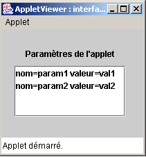
5.6.5. Aceder a recursos remotos a partir de um applet
Muitas aplicações precisam de aceder a informações armazenadas em ficheiros ou bases de dados. Já referimos que um applet não tem acesso aos recursos da máquina na qual é executado. Trata-se de uma precaução de senso comum. Caso contrário, seria possível escrever um applet para «espiar» o disco rígido de quem o carregasse. O applet tem, no entanto, acesso aos recursos do servidor a partir do qual foi descarregado, tais como ficheiros. É isso que vamos ver agora.
5.6.5.1. A Classe URL
Qualquer aplicação Java pode ler um ficheiro localizado numa máquina na rede utilizando a classe java.net.URL (URL = Uniform Resource Locator). Um URL identifica um recurso de rede, a máquina na qual se encontra, bem como o protocolo e a porta de comunicação a utilizar para o recuperar, na forma:
protocolo:porta//máquina/ficheiro
Assim, o URL http://www.ibm.com/index.html refere-se ao ficheiro index.html na máquina www.ibm.com. É acessível através do protocolo HTTP. A porta não é especificada: o navegador utilizará a porta 80, que é a porta predefinida para o serviço HTTP.
Vamos analisar mais detalhadamente alguns dos elementos da classe URL:
public URL(String spec) | cria uma instância de URL a partir de uma cadeia de caracteres no formato "protocolo:porta//máquina/ficheiro" - lança uma exceção se a sintaxe da cadeia de caracteres não corresponder a uma URL |
public String getFile() | recupera o campo do ficheiro da string "protocolo:porta//máquina/ficheiro" na URL |
public String getHost() | recupera o campo "machine" da parte "protocol:port//machine/file" da URL |
public String getPort() | recupera o campo «port» da cadeia de caracteres da URL «protocol:port//machine/file» |
public String getProtocol() | recupera o campo do protocolo da cadeia de caracteres da URL "protocolo:porta//máquina/ficheiro" |
public URLConnection openConnection() | abre uma ligação à máquina remota getHost() na sua porta getPort() utilizando o protocolo getProtocol() para ler o ficheiro getFile(). Lança uma exceção se a ligação não puder ser aberta |
public final InputStream openStream() | Atalho para openConnection().getInputStream(). Recupera um fluxo de entrada a partir do qual o conteúdo do ficheiro getFile() pode ser lido. Lança uma exceção se o fluxo não puder ser obtido |
public String toString() | Exibe a identidade da instância da URL |
Existem aqui dois métodos que nos interessam:
- public URL(String spec) para especificar o ficheiro a ser processado
- public final InputStream openStream() para o processar
5.6.5.2. Um exemplo: um console-
Vamos escrever um programa Java, sem interface gráfica, concebido para exibir no ecrã o conteúdo de um URL que lhe seja passado como parâmetro. Um exemplo de chamada poderia ser o seguinte:
O programa é relativamente simples:
import java.net.*; // for the URL class
import java.io.*; // for streams
public class urlcontenu{
// displays contents of URL passed as argument
// this content must be text to be ˆtre lisible
public static void main (String arg[]){
// argument verification
if(arg.length==0){
System.err.println("Syntaxe pg url");
System.exit(0);
}
try{
// creation of URL
URL url=new URL(arg[0]);
// content reading
try{
// input stream creation
BufferedReader is=new BufferedReader(new InputStreamReader(url.openStream()));
try{
// read text lines in the input stream
String ligne;
while((ligne=is.readLine())!=null)
System.out.println(ligne);
} catch (Exception e){
System.err.println("Erreur lecture : " +e);
}
finally{
try { is.close(); } catch (Exception e) {}
}
} catch (Exception e){
System.err.println("Erreur openStream : " +e);
}
} catch (Exception e){
System.err.println("Erreur création URL : " +e);
}
}// fine hand
}// end of class
Depois de verificar que existe realmente um argumento, tentamos criar uma URL com ele:
// création de l'URL
URL url=new URL(arg[0]);
Esta criação pode falhar se o argumento não seguir a sintaxe do URL:protocolo:porta//máquina/ficheiro. Se tivermos um URL sintaticamente correto, tentamos criar um fluxo de entrada a partir do qual possamos ler linhas de texto. O fluxo de entrada fornecido por um URL URL.openStream() fornece um InputStream, que é um fluxo orientado por caracteres: a leitura ocorre caractere a caractere, e deve formar as linhas você mesmo. Para ler linhas de texto, deve utilizar o método readLine das classes BufferedReader ou DataInputStream. Aqui, optámos pelo BufferedReader. Resta apenas converter o InputStream da URL num fluxo BufferedReader. Isto é feito através da criação de um fluxo InputStreamReader intermédio:
BufferedReader is=new BufferedReader(new InputStreamReader(url.openStream()));
A criação deste fluxo pode falhar. Tratamos a exceção correspondente. Assim que o fluxo for obtido, basta ler as linhas de texto a partir dele e exibi-las no ecrã.
String ligne;
while((ligne=is.readLine())!=null)
System.out.println(ligne);
Mais uma vez, a leitura pode lançar uma exceção que deve ser tratada. Aqui está um exemplo da execução do programa que solicita um URL local:
E:\data\serge\Jbuilder\interfaces\JApplets\3>java urlcontenu http://localhost
<html>
<head>
<title>Bienvenue dans le Serveur Web personnel</title>
</head>
<body bgcolor="#FFFFFF" link="#0080FF" vlink="#0080FF"
topmargin="0" leftmargin="0">
<table border="0" cellpadding="0" cellspacing="0" width="100%"
bgcolor="#000000">
............
</table>
</center></div></td>
</tr>
</table>
</td>
</tr>
</table>
</body>
</html>
5.6.5.3. Um exemplo de um utilizador gráfico
A interface gráfica terá o seguinte aspeto:

Número | Nome | Tipo | Função |
1 | txtURL | JTextField | URL a ler |
2 | btnLoad | JButton | botão para iniciar o carregamento da URL |
3 | JScrollPane1 | JScrollPane | painel rolável |
4 | lstURL | JList | lista que exibe o conteúdo do URL solicitado |
Quando executado, obtemos um resultado semelhante ao do programa de consola:

O código relevante para a aplicação é o seguinte:
import java.awt.*;
import java.awt.event.*;
import javax.swing.*;
import javax.swing.event.*;
import java.net.*;
import java.io.*;
public class interfaceURL extends JFrame {
JPanel contentPane;
JLabel jLabel1 = new JLabel();
JTextField txtURL = new JTextField();
JButton btnCharger = new JButton();
JScrollPane jScrollPane1 = new JScrollPane();
DefaultListModel lignes=new DefaultListModel();
JList lstURL = new JList(lignes);
//Building the frame
public interfaceURL() {
..............
}
//Initialize component
private void jbInit() throws Exception {
..............
}
//Replaced, so we can get out when the window is closed
protected void processWindowEvent(WindowEvent e) {
...................
}
void txtURL_caretUpdate(CaretEvent e) {
// sets the state of the Load button
btnCharger.setEnabled(! txtURL.getText().trim().equals(""));
}
void btnCharger_actionPerformed(ActionEvent e) {
// displays contents of URL in list
try{
afficherURL(txtURL.getText().trim());
}catch(Exception ex){
// error display
JOptionPane.showMessageDialog(this,"Erreur : " + ex.getMessage(),"Erreur",JOptionPane.ERROR_MESSAGE);
}//try-catch
}
private void afficherURL(String strURL) throws Exception {
// displays contents of URL strURL in list
// no exceptions are handled specifically. They are simply reassembled
// creation of URL
URL url=new URL(strURL);
// input stream creation
BufferedReader IN=new BufferedReader(new InputStreamReader(url.openStream()));
// read text lines in the input stream
String ligne;
while((ligne=IN.readLine())!=null)
lignes.addElement(ligne);
// close reading flow
IN.close();
}
}
5.6.5.4. Um applet
A aplicação gráfica anterior é convertida num applet, tal como já foi demonstrado várias vezes. O applet está incorporado num documento HTML denominado appliURL.htm:
<html>
<head>
<title>Applet lisant une URL</title>
</head>
<body>
<h1>Applet lisant une URL</h1>
<applet
code="appletURL.class"
width="400"
height="300"
>
</applet>
</body>
</html>
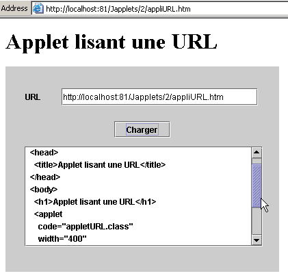
No exemplo acima, o navegador solicitou a URL http://localhost:81/Japplets/2/appliURL.htm a partir de um servidor web Apache em execução na porta 81. O applet foi então exibido no navegador. Neste exemplo, solicitámos novamente a URL http://localhost:81/Japplets/2/appliURL.htm para verificar se estávamos realmente a obter o ficheiro appliURL.htm que tínhamos criado. Agora, vamos tentar carregar uma URL que não pertença à máquina que serviu o applet (neste caso, localhost):

A URL foi recusada. Aqui deparamo-nos com a limitação associada aos applets: estes só podem aceder a recursos de rede na máquina a partir da qual foram descarregados. Existe uma forma de o applet contornar esta restrição, que consiste em delegar os pedidos de rede a um programa de servidor localizado na máquina a partir da qual foi descarregado. Este programa fará os pedidos de rede em nome do applet e enviar-lhe-á os resultados. Isto é designado por programa proxy.
5.7. O Applet de Cálculo de Impostos
Vamos agora converter a aplicação gráfica IMPOTS num applet. Isto reveste-se de particular interesse: a aplicação ficará disponível para qualquer utilizador da Internet que disponha de um navegador e de um plugin Java 1.4 (graças ao componente JSpinner). A nossa aplicação torna-se, assim, global... Esta modificação exigirá um pouco mais do que a simples conversão de aplicação gráfica para applet que se tornou agora padrão. A aplicação utiliza uma opção de menu Initialize concebida para ler o conteúdo de um ficheiro local. No entanto, se considerarmos uma aplicação web, verificamos que esta abordagem já não funciona:

É claro que os dados que definem as faixas de imposto estarão no servidor web e não em cada máquina cliente. O ficheiro a ser lido do servidor web será colocado aqui na mesma pasta que o applet, e a opção «Initialize» terá de o recuperar a partir daí. Os exemplos anteriores mostraram como fazer isto. Além disso, para selecionar o ficheiro de dados localmente, tínhamos utilizado um componente JFileChooser, que já não é necessário aqui.
O documento HTML que contém o applet será o seguinte:
<html>
<head>
<title>Applet de calcul d'impôts</title>
</head>
<body>
<h2>Calcul d'impôts</h2>
<applet
code="appletImpots.class"
width="320"
height="270"
>
<param name="data" value="impots.txt">
Repare no parâmetro data, cujo valor é o nome do ficheiro que contém os dados das faixas de imposto. O documento HTML, a classe appletImpots, a classe impots e o ficheiro impots.txt encontram-se todos na mesma pasta no servidor web:
E:\data\serge\web\JApplets\impots>dir
12/06/2002 13:24 247 impots.txt
13/06/2002 10:17 654 appletImpots$2.class
13/06/2002 10:17 653 appletImpots$3.class
13/06/2002 10:17 653 appletImpots$4.class
13/06/2002 10:17 651 appletImpots$5.class
13/06/2002 10:06 651 appletImpots$6.class
13/06/2002 10:17 8 655 appletImpots.class
13/06/2002 10:17 657 appletImpots$1.class
13/06/2002 10:24 286 appletImpots.htm
13/06/2002 10:17 1 305 impots.class
O código do applet é o seguinte (destacámos apenas as alterações em relação à aplicação gráfica):
...........
import java.net.*;
import java.applet.Applet;
public class appletImpots extends JApplet {
// window components
JPanel contentPane;
............................
// class attributes
double[] limites=null;
double[] coeffr=null;
double[] coeffn=null;
impots objImpots=null;
String urlDATA=null;
//Building the frame
public void init() {
//enableEvents(AWTEvent.WINDOW_EVENT_MASK);
try {
jbInit();
}
catch(Exception e) {
e.printStackTrace();
}
// other initializations
moreInit();
}
// form initialization
private void moreInit(){
// calculate menu disabled
mnuCalculer.setEnabled(false);
................
// retrieve the name of the tax scale file
String nomFichier=getParameter("data");
// mistake?
if(nomFichier==null){
// error msg
txtStatus.setText("Le paramètre data de l'applet n'a pas été initialisé");
// we block the Initialize option
mnuInitialiser.setEnabled(false);
// end
return;
}//if
// set the URL of the data
urlDATA=getCodeBase()+"/"+nomFichier;
}//moreInit
//Initialize component
private void jbInit() throws Exception {
...................
}
void mnuQuitter_actionPerformed(ActionEvent e) {
// quit the application
System.exit(0);
}
void mnuInitialiser_actionPerformed(ActionEvent e) {
// load the data file
try{
// dATA READING
lireDATA();
// create impots object
objImpots=new impots(limites,coeffr,coeffn);
................
}
private void lireDATA() throws Exception {
// data tables
ArrayList aLimites=new ArrayList();
ArrayList aCoeffR=new ArrayList();
ArrayList aCoeffN=new ArrayList();
String[] champs=null;
// open file in read mode
BufferedReader IN=new BufferedReader(new InputStreamReader(new URL(urlDATA).openStream()));
// read the file line by line
....................
}
void mnuCalculer_actionPerformed(ActionEvent e) {
// tAX CALCULATION
......................
}
void txtSalaire_caretUpdate(CaretEvent e) {
..........
}
void mnuEffacer_actionPerformed(ActionEvent e) {
...............
}
}
Aqui, comentamos apenas as alterações resultantes do facto de o ficheiro de dados a ser lido estar agora numa máquina remota, em vez de numa máquina local:
A URL do ficheiro de dados a ser lido é obtida utilizando o seguinte código:
// retrieve the name of the tax scale file
String nomFichier=getParameter("data");
// mistake?
if(nomFichier==null){
// error msg
txtStatus.setText("Le paramètre data de l'applet n'a pas été initialisé");
// we block the Initialize option
mnuInitialiser.setEnabled(false);
// end
return;
}//if
// set the URL of the data
urlDATA=getCodeBase()+"/"+nomFichier;
Lembre-se de que o nome do ficheiro "impots.txt" é passado no parâmetro de dados do applet:
O código acima começa por recuperar o valor do parâmetro data, ao mesmo tempo que trata de quaisquer erros potenciais. Se o URL do documento HTML que contém o applet for http://localhost:81/JApplets/impots/appletImpots.htm, o URL do ficheiro impots.txt será http://localhost:81/JApplets/impots/impots.txt. Precisamos de construir este URL. O método getCodeBase() do applet devolve a URL do diretório onde o documento HTML que contém o applet foi recuperado, portanto, no nosso exemplo, http://localhost:81/JApplets/impots. A instrução seguinte constrói, portanto, a URL para o ficheiro de dados:
No método lireFichier(), que lê o conteúdo da URL urlData, encontramos a criação do fluxo de entrada que nos permitirá ler os dados:
// open file in read mode
BufferedReader IN=new BufferedReader(new InputStreamReader(new URL(urlDATA).openStream()));
A partir deste ponto, já não é possível distinguir se os dados provêm de um ficheiro remoto em vez de um local. Aqui está um exemplo do applet em ação:
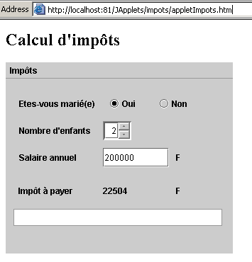
5.8. Conclusão
Este capítulo forneceu
- uma introdução à criação de interfaces gráficas de utilizador com o JBuilder
- os componentes Swing mais comuns
- o desenvolvimento de applets
É importante referir que
- o código gerado pelo JBuilder pode ser escrito manualmente. Uma vez obtido esse código, seja de que forma for, basta um JDK simples para o executar, deixando o JBuilder de ser essencial.
- A utilização de uma ferramenta como o JBuilder pode conduzir a ganhos significativos de produtividade:
- embora seja possível escrever manualmente o código gerado pelo JBuilder, isso pode ser muito demorado e oferece poucos benefícios, uma vez que a lógica da aplicação geralmente está noutro local.
- O código gerado pode ser instrutivo. Lê-lo e estudá-lo é uma boa forma de descobrir certos métodos e propriedades dos componentes que está a utilizar pela primeira vez.
- O JBuilder é multiplataforma. Por isso, mantém as suas competências ao alternar entre plataformas. Ser capaz de escrever programas que funcionam tanto no Windows como no Linux é, naturalmente, um fator de produtividade muito importante. Mas isto deve-se ao próprio Java, não ao JBuilder.
5.9. JBuilder no Linux
Todos os exemplos anteriores foram testados no Windows 98. Poder-se-á questionar se os programas escritos são portáveis tal como estão para o Linux. Desde que a máquina Linux em questão tenha as classes utilizadas pelos vários programas, sim, são. Se, por exemplo, tiver instalado o JBuilder no Linux, as classes necessárias já se encontram na sua máquina. Aqui está um exemplo do que acontece quando um dos nossos programas é executado no componente JList com o JBuilder 4 no Linux:
Abaixo, descrevemos a instalação do JBuilder 4 Foundation numa máquina Linux. A instalação numa máquina Win9x não apresenta problemas e é semelhante ao processo aqui descrito. A instalação de versões posteriores é provavelmente diferente, mas este documento pode ainda fornecer algumas informações úteis.
O JBuilder está disponível no site da Inprise em http://www.inprise.com/jbuilder

Esta página contém links para Windows e Linux, entre outros. Vamos agora descrever a instalação do JBuilder numa máquina Linux que execute a interface gráfica KDE.
Ao clicar no link «JBuilder 4 para Linux», surge um formulário. Preencha-o e receberá dois ficheiros:
jb4docs_fr.tar.gz: documentação e exemplos do JBuilder 4
jb4fndlinux_fr.tar.gz: JBuilder 4 Foundation. Esta é uma versão limitada do JBuilder 4 comercial, mas é suficiente para fins educativos.
Será-lhe enviada uma chave de ativação do software por e-mail. Esta permitirá que utilize o JBuilder 4 e será solicitada na sua primeira utilização. Se perder esta chave, pode regressar ao URL acima e seguir o link «obter a sua chave de ativação». A partir daqui, assumiremos que está conectado como root e que se encontra no diretório que contém os dois ficheiros tar.gz mencionados acima. Descompacte os dois ficheiros:
[ls -l]
drwxr-xr-x 3 nobody nobody 4096 oct 10 2000 docs
drwxr-xr-x 3 nobody nobody 4096 déc 5 13:00 foundation
[ls -l foundation]
-rw-r--r-- 1 nobody nobody 1128 déc 5 13:00 deploy.txt
-rwxr-xr-x 1 nobody nobody 69035365 déc 5 13:00 fnd_linux_install.bin
drwxr-xr-x 2 nobody nobody 4096 déc 5 13:00 images
-rw-r--r-- 1 nobody nobody 15114 déc 5 13:00 index.html
-rw-r--r-- 1 nobody nobody 23779 déc 5 13:00 license.txt
-rw-r--r-- 1 nobody nobody 75739 déc 5 13:00 release_notes.html
-rw-r--r-- 1 nobody nobody 31902 déc 5 13:00 whatsnew.html
[ls -l docs]
-rw-r--r-- 1 nobody nobody 1128 oct 10 2000 deploy.txt
-rwxr-xr-x 1 nobody nobody 40497874 oct 10 2000 doc_install.bin
drwxr-xr-x 2 nobody nobody 4096 oct 10 2000 images
-rw-r--r-- 1 nobody nobody 9210 oct 10 2000 index.html
-rw-r--r-- 1 nobody nobody 23779 oct 10 2000 license.txt
-rw-r--r-- 1 nobody nobody 75739 oct 10 2000 release_notes.html
-rw-r--r-- 1 nobody nobody 31902 oct 10 2000 whatsnew.html
Em ambos os diretórios gerados, o ficheiro .bin é o ficheiro de instalação. Além disso, utilize um navegador da Web para visualizar o ficheiro index.html em cada diretório. Estes fornecem instruções para a instalação de ambos os produtos. Vamos começar por instalar o JBuilder Foundation:
Aparece o primeiro ecrã de instalação. Seguir-se-ão muitos mais:

Confirme. Segue-se um ecrã explicativo:

Clique em [Seguinte].

Aceite o contrato de licença e clique em [Seguinte].

Aceite o local sugerido para o JBuilder (anote-o; vai precisar dele mais tarde) e clique em [Seguinte]. A instalação é concluída rapidamente.

Estamos prontos para um primeiro teste. No KDE, inicie o gestor de ficheiros para aceder ao diretório do executável do JBuilder: /opt/jbuilder4/bin (se instalou o JBuilder em /opt/jbuilder4):

Clique no ícone do JBuilder acima. Como esta é a primeira vez que utiliza o JBuilder, terá de introduzir a sua chave de ativação:

Preencha os campos Nome e Empresa. Clique em [Adicionar] para introduzir a sua chave de ativação. Lembre-se de que esta chave deve ter-lhe sido enviada por e-mail e, caso a tenha perdido, pode recuperá-la a partir do URL onde descarregou o JBuilder 4 (consulte o início da instalação). Assim que a sua chave de ativação for aceite, os termos da licença serão apresentados:

Ao clicar em OK, regressa à janela de introdução de informações que viu anteriormente:

Clique em OK para concluir esta etapa, que só é executada durante a primeira execução. O ambiente de desenvolvimento JBuilder será então apresentado:

Saia do JBuilder para instalar a documentação agora. Isto irá instalar vários ficheiros que serão utilizados na ajuda do JBuilder, que se encontra atualmente incompleta. Regresse ao diretório onde extraiu os ficheiros tar.gz do JBuilder. O programa de instalação encontra-se no diretório docs. Navegue até ele:
[cd docs]
[ls -l]
-rw-r--r-- 1 nobody nobody 1128 oct 10 2000 deploy.txt
-rwxr-xr-x 1 nobody nobody 40497874 oct 10 2000 doc_install.bin
drwxr-xr-x 2 nobody nobody 4096 oct 10 2000 images
-rw-r--r-- 1 nobody nobody 9210 oct 10 2000 index.html
-rw-r--r-- 1 nobody nobody 23779 oct 10 2000 license.txt
-rw-r--r-- 1 nobody nobody 75739 oct 10 2000 release_notes.html
-rw-r--r-- 1 nobody nobody 31902 oct 10 2000 whatsnew.html
O ficheiro de instalação é o doc_install.bin, mas não o pode executar imediatamente. Se o fizer, a instalação falhará sem que compreenda o motivo. Leia o ficheiro index.html num navegador para obter uma descrição detalhada do processo de instalação. O instalador requer uma Máquina Virtual Java (JVM); especificamente, um programa chamado java, que deve estar no PATH da sua máquina. Note que PATH é uma variável Unix cujo valor, na forma rep1:rep2:...:repn, especifica os diretórios repi que devem ser pesquisados ao procurar um executável. Aqui, o instalador solicita a execução de um programa Java. Pode ter várias versões deste programa, dependendo do número de máquinas virtuais Java que tenha instalado aqui e ali. Logicamente, utilizaremos a fornecida pelo JBuilder 4, que se encontra em /opt/jbuilder4/jdk1.3/bin. Para adicionar este diretório à variável PATH:
[echo $PATH]
/usr/local/sbin:/usr/sbin:/sbin:/usr/local/sbin:/usr/local/bin:/sbin:/bin:/usr/sbin:/usr/bin:/usr/X11R6/bin:/root/bin
[export PATH=/opt/jbuilder4/jdk1.3/bin/:$PATH]
[echo $PATH]
/opt/jbuilder4/jdk1.3/bin/:/usr/local/sbin:/usr/sbin:/sbin:/usr/local/sbin:/usr/local/bin:/sbin:/bin:/usr/sbin:/usr/bin:/usr/X11R6/bin:/root/bin
Agora podemos iniciar a instalação da documentação:
Esta é uma instalação gráfica:

É muito semelhante à do JBuilder Foundation. Por isso, não entraremos em detalhes aqui. Há um ecrã que não deve perder:
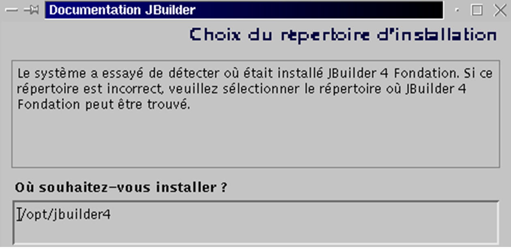
Normalmente, o instalador deve localizar por si próprio o local onde instalou o JBuilder Foundation. Por isso, não altere as configurações predefinidas, a menos que, evidentemente, estejam incorretas.
Assim que a documentação estiver instalada, estamos prontos para outro teste do JBuilder. Inicie a aplicação como mostrado acima. Assim que o JBuilder estiver aberto, selecione Ajuda > Tópicos de Ajuda. No painel esquerdo, clique na ligação Tutoriais:

O JBuilder inclui um conjunto de tutoriais que o ajudarão a dar os primeiros passos na programação Java. Abaixo, seguimos o tutorial «Criar uma aplicação» mencionado acima.

No JBuilder, vá a Ficheiro > Novo Projeto. Um assistente irá guiá-lo através de três ecrãs:

Vamos criar uma janela simples com o título «Olá a todos». Vamos chamar a este projeto «hello». O exemplo foi executado pelo utilizador root. O JBuilder sugere então agrupar todos os projetos num diretório «jbproject» dentro do diretório de login do utilizador root. O projeto «hello» será colocado no diretório «hello» (campo Nome do diretório do projeto) dentro de «jbproject». Clique em [Seguinte].

Esta segunda tela é um resumo dos vários caminhos do seu projeto. Não há nada a alterar. Clique em [Seguinte].

A terceira tela solicita que personalize o seu projeto. Preencha os detalhes e clique em [Concluir].
Agora vá a Ficheiro/Novo:
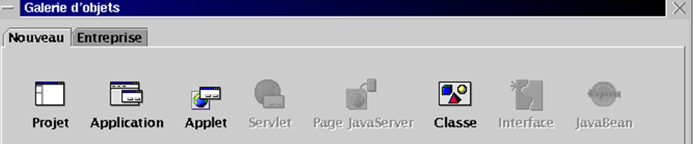
Selecione Aplicação e clique em OK. Um novo assistente irá apresentar dois ecrãs:

O campo Pacote utiliza o nome do projeto. O campo Classe solicita o nome a atribuir à classe principal do projeto. Utilize o nome acima e clique em [Seguinte]:
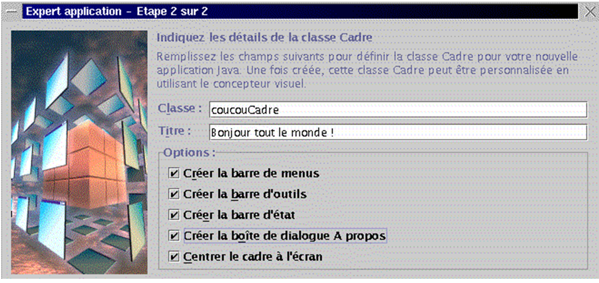
A nossa aplicação inclui uma segunda classe Java para a janela da aplicação. Dê um nome a esta classe. O campo Título é o título que pretende atribuir a esta janela. O painel Opções oferece opções para a sua janela. Selecione todas elas e clique em [Concluir]. Em seguida, regressará ao ambiente do JBuilder, que foi atualizado com as informações que forneceu para o seu projeto:

Na janela superior esquerda (1), vê a lista de ficheiros que compõem o seu projeto. Isto inclui as duas classes .java que acabámos de nomear. Na janela à direita (2), vê o código Java para a classe coucouCadre. A janela inferior esquerda mostra a estrutura (classes, métodos, atributos) do seu projeto. Está pronto a ser executado. Clique no botão 4 acima, ou selecione Run/Run Project, ou prima F9. Deverá ver a seguinte janela:

Ao clicar na opção Ajuda, deverá ver as informações que forneceu aos assistentes de criação. Não iremos mais longe. Está na hora de mergulhar nos tutoriais.
Antes de terminarmos, vamos apenas mostrar que pode utilizar não o JBuilder e a sua interface gráfica, mas sim o JDK que ele trouxe consigo e colocou em /opt/jbuilder4/jdk1.3. Crie o seguinte ficheiro essai1.java:
import java.io.*;
public class essai1{
public static void main(String args[]){
System.out.println("coucou");
System.exit(0);
}
}
Vamos compilar e executar utilizando o JBuilder JDK: